능력단위 서버프로그램 구현 (2001020211_23v6) / 5수준 · 평가방법 포트폴리오 (100점)
과제는 하나입니다. 미완성 프로젝트 EX01 의 빈 메서드를 채우는 것입니다. 상품을 다루는 REST API 를 만들고, 일괄 등록과 품절 점검 배치까지 돌게 합니다. 앞 교과와 크게 다른 점이 둘입니다. 화면이 없고, 테스트 코드를 직접 써야 합니다.
| 묶음 | 능력단위요소 | 무엇을 하는가 | 배점 |
|---|---|---|---|
| ① | 개발환경 구축하기 | 의존성 · 설정 파일 · 기동 · 형상관리 방침과 운영 | 20 |
| ② | 공통 모듈 구현하기 | 공통 요소 도출 · 패키지 배치 · 계층 분리 · 테스트 케이스 명세 | 25 |
| ③ | 서버 프로그램 구현하기 | 업무 프로세스 맵 · REST CRUD · 트랜잭션 · 보안 · 테스트 | 35 |
| ④ | 배치 프로그램 구현하기 | 스케줄 배치 · 일괄 등록 · 전체 롤백 · 배치 테스트 | 20 |
스무 항목 100점이고 항목마다 3점에서 8점까지 다릅니다. 가장 큰 항목이 REST CRUD 다섯 종(8점) 과 보안 취약성 제거(8점) 입니다. 가장 작은 것은 3점짜리 셋 — 형상관리 운영 · 배치 조회 트랜잭션 · 배치 테스트입니다.
앞 교과 「애플리케이션 설계」 가 어디에 무엇을 둘지를 다뤘다면, 이 교과는 그대로 만들어 돌리는 일을 다룹니다. 그래서 요소가 넷으로 늘었고, 각 요소가 16시간씩 고르게 나뉘어 있습니다.
| 수행준거 | 준거의 말 | 이 평가에서 |
|---|---|---|
| 1.1 | 하드웨어 및 소프트웨어의 필요 사항을 검토하고 준비를 수행 | 의존성 다섯을 골라 build.gradle 에 넣습니다 |
| 1.2 | 하드웨어 및 소프트웨어를 설치하고 설정하여 개발환경을 구축 | 설정 파일 둘로 DB 와 포트를 잡고 기동합니다 |
| 1.3 | 형상관리 방침에 따라 형상관리 환경을 구축 | 브랜치 전략과 커밋 규칙을 세워 실제로 지킵니다 |
| 2.1 | 상세 설계를 기반으로 공통 모듈을 작성 | 공통 응답 · 전역 예외 · 업무 예외 · DTO 를 만듭니다 |
| 2.2 | 결합도는 줄이고 응집도를 높인 공통 모듈을 구현 | 컨트롤러는 Service 만, Service 는 Repository 만 부릅니다 |
| 2.3 | 테스트 케이스를 작성하고 테스트 조건을 명세화 | 입력과 기대 결과를 적은 표 + JUnit 코드 |
| 3.1 | 업무 프로세스 맵과 세부 업무 프로세스를 확인 | 요청 → 검증 → Service → Repository → DB 를 그립니다 |
| 3.2 | 세부 업무 프로세스를 기반으로 업무 프로그램을 구현 | REST CRUD 다섯 종을 만듭니다 |
| 3.3 | 잠재적 보안 취약성이 제거되도록 서버 프로그램을 구현 | 음수 차단 · 파라미터 바인딩 · 예외 민감정보 비노출 |
| 3.4 | 내부 기능과 인터페이스에 대해 테스트를 수행 | JUnit 과 Postman 둘 다로 확인합니다 |
| 4.1 | 배치 프로그램 구현 기술에 부합하는 배치 프로그램을 구현 | @EnableScheduling + @Scheduled 로 품절 점검 |
| 4.2 | 하위 시스템 간 연동 시 안정적이고 안전하게 동작 | 일괄 등록을 한 트랜잭션으로 · 중간 실패 시 전체 롤백 |
| 4.3 | 개발된 배치 프로그램을 테스트 | ProductBatchTest 한 가지 |
준거 열셋이 채점 항목 스물로 쪼개져 있습니다. 눈여겨볼 것은 「테스트」 라는 말이 세 번 나온다는 점입니다(2.3 · 3.4 · 4.3). 테스트를 안 쓰면 세 군데에서 합쳐 14점을 잃습니다.
네 단계로 나누었고, 능력단위요소와 그대로 짝이 맞습니다. 앞 두 단계는 코드를 조금 쓰고 문서를 많이 쓰며, 뒤 두 단계는 거의 코드만 씁니다.
예제는 상품을 다루는 REST API 입니다. 목록 · 단건 · 등록 · 수정 · 삭제 다섯에 일괄 등록이 하나 더 붙고, 재고가 0 인 상품을 주기로 세는 배치가 하나 있습니다. 검색 · 로그인 · 화면은 없습니다.
순서에 이유가 있습니다. Repository 가 있어야 Service 가 부를 것이 생기고, Service 가 있어야 컨트롤러가 위임할 곳이 생깁니다. 안에서 바깥으로 만들되, 배치는 Repository 만 있으면 되므로 중간에 막히면 배치를 먼저 해도 됩니다.
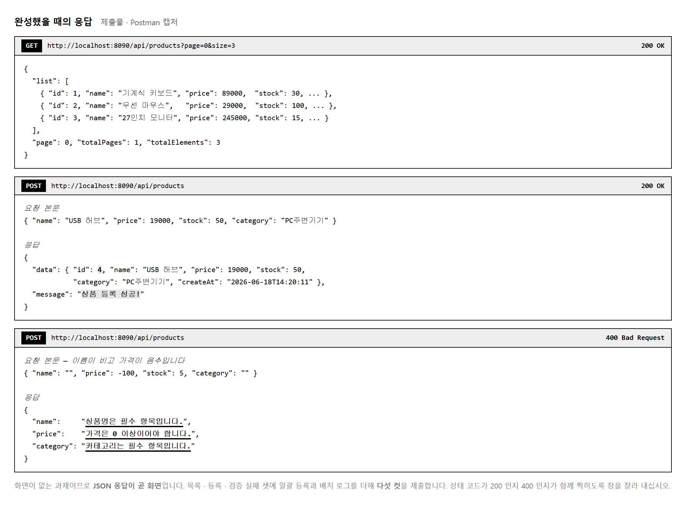
브라우저로 열어 볼 화면이 없습니다.
주소창에 /api/products 를 쳐 보면 JSON 이 그대로 뜹니다.
그것이 이 프로그램의 출력 전부입니다.
그래서 Postman 같은 도구로 요청을 보내고 응답을 봅니다.
GET 은 주소창으로도 되지만 POST · PUT · DELETE 는 안 됩니다.
본문에 JSON 을 실어 보내야 하기 때문입니다.
Postman 을 못 쓰는 환경이면 curl 로도 됩니다.
# 브라우저로는 목록만 볼 수 있습니다
http://localhost:8090/api/products
# 등록은 본문을 실어 보내야 합니다
curl -X POST http://localhost:8090/api/products \
-H "Content-Type: application/json" \
-d "{\"name\":\"USB 허브\",\"price\":19000,\"stock\":50,\"category\":\"PC주변기기\"}"
| 제출물 | 무엇을 | 덮는 채점 항목 |
|---|---|---|
| GitHub 저장소 주소 | 완성한 프로젝트 · 커밋 이력 | 4 · 5 |
| 캡처 PDF 또는 PPT | 목록 · 등록 · bulk · 검증 실패 · 배치 로그 | 12 · 14 · 16 · 17 |
| 문서 넷 | 개발환경 명세서 · 형상관리 방침 · 업무프로세스맵 · 테스트케이스 명세서 | 1 · 4 · 10 · 11 |
문서 넷이 19점을 받칩니다. 코드를 다 만들고도 문서를 안 내면 80점을 못 넘습니다. 문서라고 해서 길게 쓸 것 없이 표 한 장씩이면 됩니다.
목적 — 앞 교과와 다른 점 둘을 먼저 받아들입니다. 브라우저로 볼 화면이 없고, 테스트 코드를 직접 써야 합니다. 그리고 문서 넷이 19점을 받칩니다.
| 방식 | 주소창으로 | 도구가 필요한가 |
|---|---|---|
| GET | 됩니다 | JSON 이 그대로 뜹니다 |
| POST · PUT · DELETE | 안 됩니다 | 본문에 JSON 을 실어야 합니다 —
Postman 이나 curl |
# 목록은 주소창으로도 볼 수 있습니다
http://localhost:8090/api/products
# 등록은 본문을 실어 보내야 합니다
curl -X POST http://localhost:8090/api/products ^
-H "Content-Type: application/json" ^
-d "{\"name\":\"USB 허브\",\"price\":19000,\"stock\":50}"
curl 로도 됩니다. 윈도 명령 프롬프트에서는
줄을 이을 때 ^, 따옴표 안의 따옴표는
\" 로 적습니다.무엇을 만드는지 알고 시작하는 편이 빠릅니다.
GET /api/products → 200
{"success": true,
"message": "목록 조회 성공",
"data": [ {"id":1,"name":"무선 마우스","price":25000,"stock":10,"soldOut":false},
{"id":3,"name":"USB 허브","price":15000,"stock":0,"soldOut":true} ]}
POST /api/products (이름이 비고 값이 음수) → 400
{"success": false,
"message": "입력값을 확인하세요",
"data": {"name":"상품명을 입력하세요",
"price":"가격은 0 이상이어야 합니다",
"stock":"재고는 0 이상이어야 합니다"}}
| 눈여겨볼 것 | |
|---|---|
| 응답 모양이 늘 같습니다 | success · message ·
data 셋. 공통 응답입니다 |
| 상태 코드가 다릅니다 | 성공 200 · 검증 실패 400 · 없는 자료 404 |
| 검증 실패는 칸마다 | 어느 칸이 왜 틀렸는지 data 에 담깁니다 |
| 이렇게 자르면 | 이렇게 자릅니다 |
|---|---|
| JSON 본문만 | 상태 코드 · 요청 방식 · 주소가 함께 보이게 |
Postman 은 오른쪽 위에 200 OK 가 뜹니다.
그 줄까지 넣어 잘라야 「400 을 제대로 돌려줬다」 가 증명됩니다.
| 제출물 | 무엇을 | 덮는 항목 |
|---|---|---|
| GitHub 저장소 주소 | 완성한 프로젝트 · 커밋 이력 | 4 · 5 |
| 캡처 PDF 또는 PPT | 목록 · 등록 · bulk · 검증 실패 · 배치 로그 | 12 · 14 · 16 · 17 |
| 문서 넷 | 개발환경 명세서 · 형상관리 방침 · 업무프로세스맵 · 테스트케이스 명세서 | 1 · 4 · 10 · 11 |
| 수행준거 | 말 | 배점 |
|---|---|---|
| 2.3 | 테스트 케이스를 작성하고 조건을 명세화 | 항목 10 |
| 3.4 | 내부 기능과 인터페이스 테스트를 수행 | 항목 15 |
| 4.3 | 배치 프로그램을 테스트 | 항목 20 |
테스트를 안 쓰면 세 군데에서 합쳐 14점을 잃습니다. 앞 교과들에는 없던 요구입니다. JUnit 을 처음 써 보더라도 이번에는 써야 합니다.
| 항목 | 배점 | 실습 |
|---|---|---|
| REST CRUD 다섯 종 | 8 | 2-12 |
| 보안 취약성 제거 | 8 | 2-14 |
| 형상관리 운영 · 배치 조회 트랜잭션 · 배치 테스트 | 각 3 | 2-4 · 2-15 |
제출물 — 제출물 셋과 문서 넷을 적은 한 장 + 배점이 큰 항목 표시
스스로 확인 — ① 화면이 없다는 것을 받아들였습니까 ② POST 를 보낼 도구를 정했습니까 ③ 문서 넷이 19점인 것을 압니까 ④ 테스트가 세 군데에서 14점인 것을 압니까
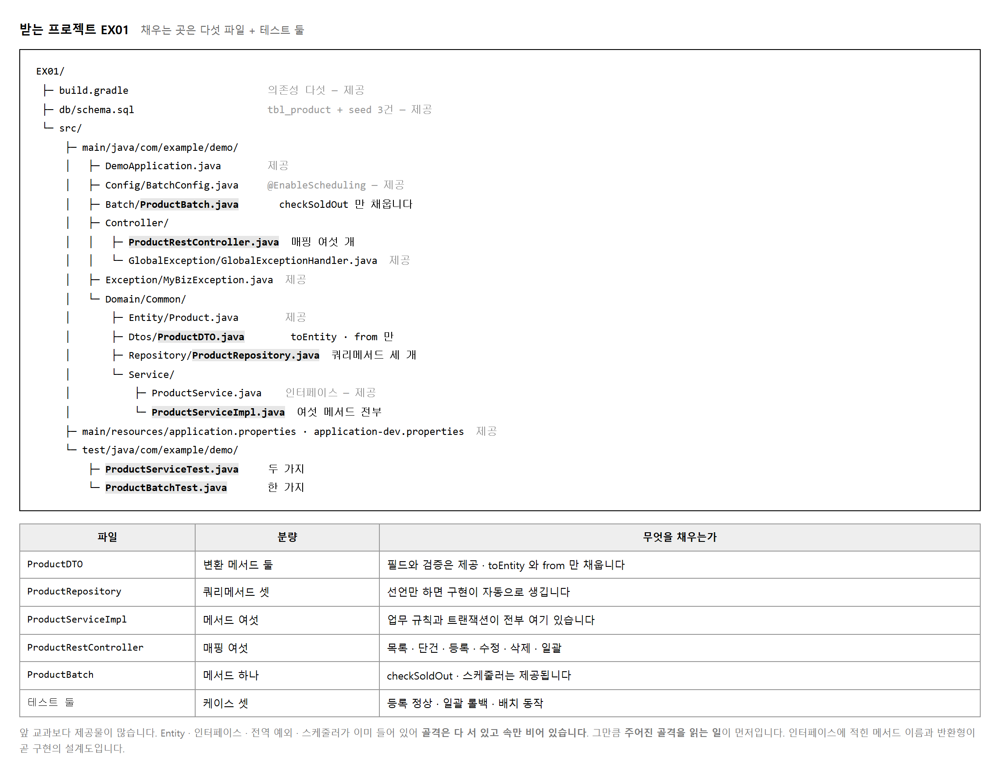
앞 교과와 달리 제공되는 것이 많습니다.
Entity · 인터페이스 · 업무 예외 · 전역 핸들러 · 스케줄러가 이미 들어 있습니다.
그래서 코드를 쓰기 전에 읽는 시간이 필요합니다.
그 가운데 ProductService 인터페이스를 먼저 보십시오.
거기 적힌 메서드 이름과 반환형이 구현의 설계도이기 때문입니다.
// ProductService — 제공되는 인터페이스. 이대로 만들면 됩니다.
public interface ProductService {
ProductDTO register(ProductDTO dto); // 등록
ProductDTO modify(Long id, ProductDTO dto); // 수정
void remove(Long id); // 삭제
ProductDTO get(Long id); // 단건
Page<ProductDTO> list(Pageable pageable); // 목록
int registerBulk(List<ProductDTO> list); // 일괄
}
MySQL 의 testdb 에 db/schema.sql 을 실행하고
gradlew.bat bootRun 으로 띄웁니다.
앞 교과와 달리 기동은 됩니다. 화면이 없으니 500 이 날 화면도 없습니다.
대신 /api/products 를 부르면
UnsupportedOperationException 이 500 으로 돌아옵니다.
목적 — 앞 교과와 달리 제공되는 것이 많습니다.
그래서 코드를 쓰기 전에 읽는 시간이 필요합니다.
특히 ProductService 인터페이스가 구현의 설계도 입니다.
public interface ProductService {
ProductDTO register(ProductDTO dto); // 등록
ProductDTO modify(Long id, ProductDTO dto); // 수정
void remove(Long id); // 삭제
ProductDTO get(Long id); // 단건
Page<ProductDTO> list(Pageable pageable); // 목록
int registerBulk(List<ProductDTO> list); // 일괄
}
| 여기서 읽어 낼 것 | |
|---|---|
| 메서드가 여섯 | 만들 것이 여섯입니다. 더도 덜도 아닙니다 |
| 돌려주는 형 | remove 만 void.
나머지는 값을 돌려줍니다 |
registerBulk 가
int |
몇 건 넣었는지 돌려줍니다 |
implements ProductService 를 적으면
편집기가 여섯 개를 자동으로 만들어 줍니다 —
그 안을 채우면 됩니다.mysql -u root -p testdb < db/schema.sql
gradlew.bat bootRun
앞 교과와 달리 기동은 됩니다. 화면이 없으니 500 이 날 화면도 없습니다.
GET /api/products → 500
java.lang.UnsupportedOperationException
아직 구현하지 않았습니다
| 이 예외의 뜻 | |
|---|---|
UnsupportedOperationException |
「아직 안 만들었다」 는 표시로 빈 메서드에 일부러 넣어 둔 것입니다 |
| 다른 오류가 난다면 | 가져오기나 설정에서 이미 어긋난 것입니다. 먼저 잡으십시오 |
| 이미 있는 것 | 무엇인가 |
|---|---|
Product (Entity) | 표 한 줄에 대응하는 클래스 |
ProductService (인터페이스) | 설계도 |
| 업무 예외 · 전역 핸들러 | 오류를 받아 응답으로 바꾸는 곳 |
| 스케줄러 뼈대 | @Scheduled 가 붙은 메서드 |
| 채울 것 | 실습 |
|---|---|
ProductServiceImpl | 2-11 |
ProductController | 2-12 |
| 일괄 등록 · 배치 본문 | 2-13 · 2-15 |
| 테스트 둘 | 2-9 · 2-15 |
show-sql 을 켜 «나가는 SQL» 을 봅니다spring.jpa.show-sql=true
Hibernate: select p1_0.id,p1_0.name,p1_0.price,p1_0.sold_out,p1_0.stock
from product p1_0 where p1_0.stock<=?
Hibernate: insert into product (name,price,sold_out,stock) values (?,?,?,?)
| 여기서 확인할 것 | |
|---|---|
| 물음표가 보입니다 | JPA 가 알아서 바인딩합니다. 값을 이어 붙이지 않습니다 (실습 2-14) |
칸 이름이 sold_out |
자바 필드는 soldOut 인데
JPA 가 밑줄로 바꿔 찾습니다 |
soldOut 으로 만들면 못 찾습니다.
Unknown column 'p1_0.sold_out' in 'field list'
JPA 는 대문자 앞에 밑줄을 넣어 찾는 것이 기본입니다.
schema.sql 의 칸 이름을 밑줄 방식으로 두거나,
엔티티에 @Column(name = "soldOut") 을 적어 맞추십시오.git add .
git commit -m "chore: 프로젝트 초기 상태"
아직 아무것도 안 채웠지만 「받은 그대로」 가 기록에 남습니다. 실습 2-4 의 형상관리 방침이 여기서부터 시작됩니다.
제출물 — 500 응답 두 컷 + show-sql 로 찍힌 SQL
스스로 확인 —
① ProductService 의 여섯 메서드를 읽었습니까
② 500 두 컷을 찍었습니까
③ show-sql 을 켜 물음표를 봤습니까
④ ddl-auto 가 none 입니까
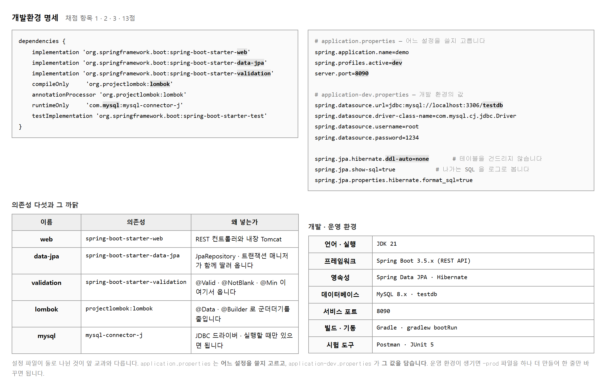
의존성은 필요한 것만 넣습니다. 많이 넣을수록 좋은 것이 아닙니다.
REST 를 하려면 web, 데이터베이스를 쓰려면 data-jpa,
@Valid 를 쓰려면 validation 이 있어야 합니다.
lombok 은 군더더기를 줄이고, mysql-connector-j 는 드라이버입니다.
채점 항목 1 이 「검토하여 구성할 수 있는가」 입니다. 넣은 것이 아니라 왜 넣었는지를 봅니다. 명세서에 의존성마다 한 줄씩 까닭을 적어 두면 그것으로 끝납니다.
application.properties 에 spring.profiles.active=dev 한 줄이 있고,
실제 값은 application-dev.properties 에 있습니다.
나중에 운영 환경이 생기면 -prod 파일을 하나 더 만들고
그 한 줄만 바꾸면 됩니다. 코드는 건드리지 않습니다.
# JPA 설정 세 줄의 뜻
spring.jpa.hibernate.ddl-auto=none
# 테이블을 자동으로 만들거나 지우지 않습니다.
# create 로 두면 다시 띄울 때마다 자료가 사라집니다.
spring.jpa.show-sql=true
# 나가는 SQL 을 콘솔에 찍습니다. 물음표 바인딩을 눈으로 확인할 수 있습니다.
spring.jpa.properties.hibernate.format_sql=true
# 한 줄로 붙어 나오는 SQL 을 보기 좋게 줄바꿈해 줍니다.
ddl-auto 를 create 나 update 로 바꾸지 마십시오.
schema.sql 로 만든 테이블을 JPA 가 제 마음대로 고치거나 지웁니다.
기동할 때마다 seed 가 사라져 목록이 비어 보이면 이것부터 확인하십시오.
목적 — 항목 1 · 2 · 3 으로 13점 입니다. 코드를 한 줄도 안 씁니다. 항목 1 이 「검토하여 구성할 수 있는가」 라 넣은 것이 아니라 왜 넣었는지를 봅니다.
| 의존성 | 없으면 무엇이 안 되는가 |
|---|---|
spring-boot-starter-web |
@RestController 가 안 됩니다. REST 자체가 없습니다 |
spring-boot-starter-data-jpa |
JpaRepository 가 없습니다. SQL 을 손수 써야 합니다 |
spring-boot-starter-validation |
@Valid · @NotBlank 가
조용히 안 돕니다 |
lombok |
getter · setter 를 손으로 씁니다. 안 넣어도 되지만 길어집니다 |
mysql-connector-j |
드라이버가 없어 연결 자체가 안 됩니다 |
validation 을 빠뜨리면 «조용히» 안 돕니다.
@NotBlank 를 붙여도 컴파일은 되고,
@Valid 도 오류 없이 지나갑니다.
그런데 빈 값이 그대로 저장됩니다.
「검증을 달았는데 안 걸린다」 싶으면 이것부터 보십시오.| 쓰지도 않는 것을 넣으면 | 필요한 것만 넣으면 |
|---|---|
| 기동이 느려지고, 자동 설정이 엉뚱하게 끼어듭니다 | 무엇을 쓰는지가 build.gradle 만 봐도 드러납니다 |
항목 1 은 「검토」 를 봅니다. 다섯 줄에 까닭을 한 줄씩 적어 두면 그것으로 끝납니다.
# application.properties — 어느 것을 쓸지만 정합니다
spring.profiles.active=dev
# application-dev.properties — 실제 값은 여기
spring.datasource.url=jdbc:mysql://localhost:3306/testdb?...
spring.datasource.username=...
spring.datasource.password=...
server.port=8090
| 나중에 운영 환경이 생기면 | |
|---|---|
application-prod.properties 를 하나 더 |
만들고 |
spring.profiles.active=prod |
한 줄만 바꿉니다. 코드는 안 건드립니다 |
| 설정 | 하는 일 |
|---|---|
spring.jpa.hibernate.ddl-auto=none |
표를 자동으로 만들거나 지우지 않습니다 |
spring.jpa.show-sql=true |
나가는 SQL 을 콘솔에 찍습니다 |
…hibernate.format_sql=true |
한 줄로 붙는 SQL 을 보기 좋게 줄바꿈 |
ddl-auto 를 create 로 바꾸지 마십시오.
schema.sql 로 만든 표를 JPA 가 제 마음대로 지우고 다시 만듭니다.
기동할 때마다 seed 가 사라져 목록이 비어 보입니다.
「분명히 넣었는데 없어요」 의 흔한 원인입니다.
update 도 안 됩니다 — 칸을 말없이 더합니다.java -version
gradlew.bat --version
mysql -u root -p -e "SELECT VERSION();"
| 항목 | 값 | 기동 로그에서도 확인 |
|---|---|---|
| JDK | 21 | using Java 21 |
| Spring Boot | 3.5 | 기동 배너 |
| MySQL | 8 | — |
| 포트 | 8090 | Tomcat started on port 8090 |
기억으로 적지 마십시오. 명세가 실제와 다르면 항목 2 를 못 받습니다.
Starting ShopApplication using Java 21.0.2
HikariPool-1 - Start completed.
Tomcat started on port 8090 (http)
Started ShopApplication in 7.998 seconds
명세서의 표 + 이 로그 두 장이면 항목 1 · 2 · 3 을 함께 받칩니다.
docs/개발환경_명세서.md
1. 의존성 다섯 — 이름 · 왜 넣는가
2. 설정 파일 둘 — profiles 로 나눈 까닭
3. 판 — JDK · Boot · MySQL · 포트
4. 기동 로그 캡처
제출물 — docs/개발환경_명세서.md +
build.gradle · 설정 파일 둘 + 기동 로그
스스로 확인 —
① 의존성마다 까닭을 한 줄씩 적었습니까
② 설정 파일을 둘로 나눴습니까
③ ddl-auto 가 none 입니까
④ 명세서를 지금 만들었습니까
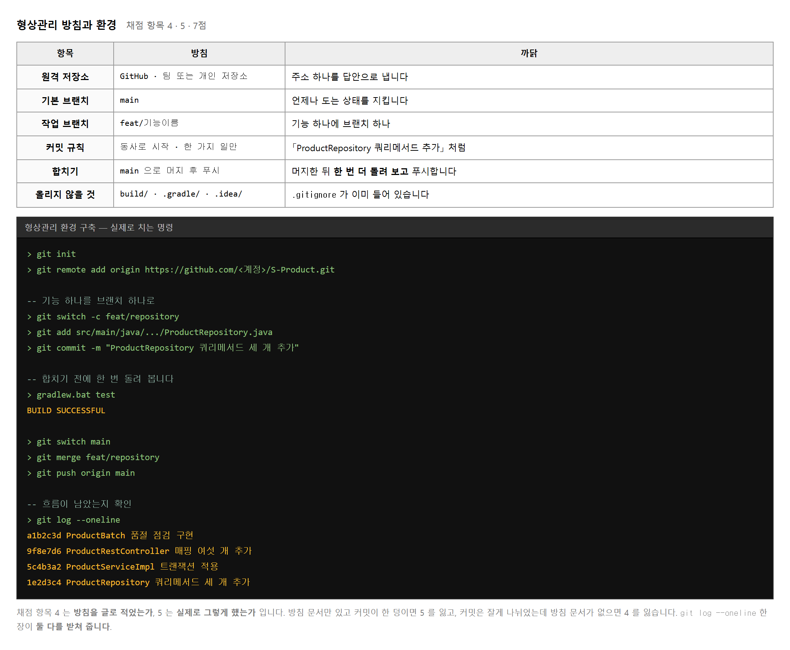
채점 항목 4 는 방침을 세워 글로 적었는가, 항목 5 는 그 방침대로 실제로 했는가 입니다. 둘이 따로 매겨지므로 한쪽만 해서는 절반입니다.
가장 자주 나오는 어긋남은 이렇습니다.
방침에는 「기능 단위로 커밋한다」 고 적어 놓고
실제로는 다 만든 뒤 「완성」 이라는 커밋 하나만 남깁니다.
채점자는 git log 를 봅니다. 거기서 바로 드러납니다.
| 이렇게 쓰면 | 이렇게 씁니다 |
|---|---|
| 수정 | ProductRepository 쿼리메서드 세 개 추가 |
| 완성 | ProductServiceImpl 트랜잭션 적용 |
| ㅁㄴㅇㄹ | 일괄등록 전체 롤백 테스트 추가 |
규칙은 둘이면 됩니다. 무엇을 했는지 명사로 시작하고, 한 커밋에 한 가지 일만 담습니다. 이렇게 해 두면 나중에 무엇이 언제 들어갔는지 찾기 쉽고, 채점자에게도 진행 과정이 그대로 보입니다.
# .gitignore 에 이미 들어 있습니다. 지우지 마십시오. build/ # 빌드 결과 — 받는 사람이 다시 만들면 됩니다 .gradle/ # Gradle 이 쓰는 임시 파일 .idea/ *.iml # IDE 설정 — 사람마다 다릅니다
이것들이 올라가 있으면 저장소가 수십 메가로 부풀고, 받는 사람 환경에서 충돌이 납니다. 올라간 것을 뒤늦게 지우면 이력에는 남으므로, 첫 커밋 전에 확인하는 것이 가장 깔끔합니다.
목적 — 항목 4 는 방침을 적었는가, 항목 5 는 그대로 했는가 입니다. 따로 매겨지므로 한쪽만 하면 절반입니다.
| 항목 | 정할 것 |
|---|---|
| 원격 저장소 | GitHub — 주소와 공개 여부 |
| 기본 브랜치 | main |
| 작업 브랜치 | feature/기능이름 |
| 커밋 규칙 | 기능 단위 · 「무엇을 했는지」 를 명사로 시작 |
| 합치기 | 작업이 끝나면 main 으로 merge |
| 올리지 않을 것 | build/ · .gradle/ ·
.idea/ · *.iml |
git log 를 봅니다.
거기서 바로 드러납니다..gitignore 가 «정말 막는지» 봅니다git add .
git commit -m "chore: 프로젝트 초기 설정"
git ls-files
.gitignore
src/A.java
build/ 와 .gradle/ 가 목록에 없어야 합니다.
파일은 폴더에 있는데 추적되지 않는 것이 맞습니다.
| 올라가면 어떻게 되는가 | |
|---|---|
| 저장소가 수십 메가로 부풉니다 | 받는 사람이 오래 기다립니다 |
.idea/ 는 사람마다 다릅니다 |
받는 쪽 환경에서 충돌이 납니다 |
| 뒤늦게 지워도 | 이력에는 남습니다 — 첫 커밋 전에 확인하십시오 |
| 이렇게 쓰면 | 이렇게 씁니다 |
|---|---|
수정 |
feat: ProductRepository 쿼리메서드 세 개 추가 |
완성 |
feat: ProductServiceImpl 트랜잭션 적용 |
ㅁㄴㅇㄹ |
test: 일괄등록 전체 롤백 테스트 추가 |
규칙은 둘이면 됩니다 — 무엇을 했는지 명사로 시작, 그리고 한 커밋에 한 가지 일만.
git log --oneline
9945126 test: 일괄등록 전체 롤백 테스트 추가
d2732b8 feat: ProductServiceImpl 트랜잭션 적용
ae47bd0 feat: ProductRepository 쿼리메서드 세 개 추가
3b7c09b chore: 프로젝트 초기 설정
네 줄만 있어도 진행 과정이 보입니다. 한 줄짜리 로그와 견주어 보십시오 — 채점자가 무엇을 언제 만들었는지 알 수 있습니다.
git checkout -b feature/product
… 작업 · 커밋 …
git checkout main
git merge --no-ff feature/product -m "merge: feature/product"
git log --oneline --graph
* ec237ff merge: feature/product
|\
| * 45a4bad feat: 상품 등록 API 구현
|/
* 9945126 test: 일괄등록 전체 롤백 테스트 추가
* d2732b8 feat: ProductServiceImpl 트랜잭션 적용
--no-ff 를 붙이는 까닭 —
안 붙이면 갈라졌던 자국 없이 한 줄로 붙어 버립니다.
붙이면 갈라졌다 합쳐진 모양이 그림으로 남아
「브랜치 전략을 썼다」 는 증거가 됩니다.| 방침에 적은 것 | 로그에서 확인되는 것 |
|---|---|
기본 브랜치 main |
git branch 에 main |
feature/기능이름 |
그래프에 feature/product |
| 기능 단위 커밋 | 커밋이 여럿 |
| 올리지 않을 것 | git ls-files 에 build/ 없음 |
줄마다 짝이 맞아야 항목 4 와 5 를 함께 받습니다.
docs/형상관리_방침.md
1. 방침 여섯 줄
2. git log --oneline --graph 캡처
3. git ls-files 캡처 (build/ 가 없다는 증거)
제출물 — docs/형상관리_방침.md +
로그 캡처 둘
스스로 확인 —
① 방침을 먼저 적었습니까
② 커밋이 여럿입니까 (하나가 아닙니까)
③ git ls-files 에 build/ 가 없습니까
④ 방침의 줄마다 로그에서 확인됩니까
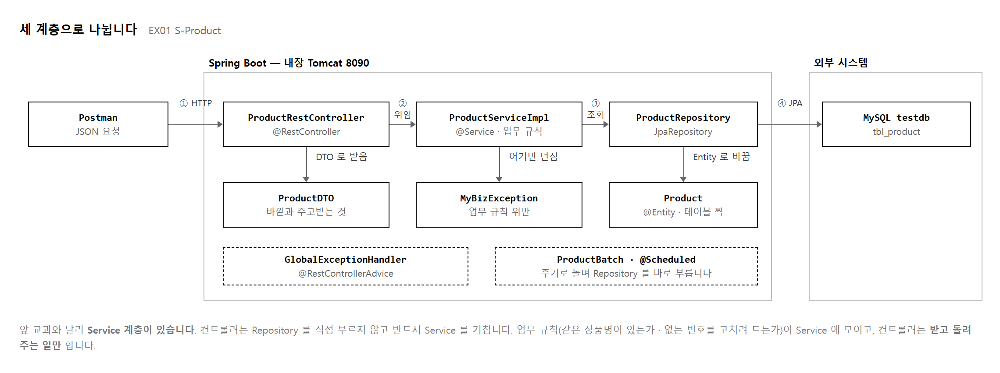
앞 교과에는 Service 가 없었고 컨트롤러가 DAO 를 바로 불렀습니다. 여기서는 가운데에 Service 가 들어옵니다. 한 층이 늘어난 만큼 코드가 길어지는데, 그럴 만한 까닭이 있습니다.
「같은 상품명이 이미 있으면 등록을 거절한다」 는 규칙을 생각해 보십시오. 이 규칙은 화면이 바뀌어도 데이터베이스가 바뀌어도 그대로입니다. 컨트롤러에 두면 화면이 늘 때마다 베껴야 하고, Repository 에 두면 데이터베이스를 바꿀 때 같이 흔들립니다. 양쪽 다 아닌 가운데에 두는 것이 Service 입니다.
| 계층 | 아는 것 | 모르는 것 |
|---|---|---|
| ProductRestController | HTTP 방식 · 경로 · 상태 코드 · Service | SQL · 업무 규칙 · Entity |
| ProductServiceImpl | 업무 규칙 · 트랜잭션 · Repository · Entity | HTTP · 상태 코드 |
| ProductRepository | 테이블 · 조회 조건 | 업무 규칙과 HTTP 를 모두 모릅니다 |
완성한 뒤 두 가지만 찾아보면 됩니다.
ProductRestController 안에 productRepository 가 없어야 합니다.
있으면 채점 항목 8 을 잃습니다.ProductServiceImpl 안에 ResponseEntity 나
HttpStatus 가 없어야 합니다.
있으면 항목 9 를 잃습니다.두 낱말을 프로젝트 전체에서 찾아보는 데 일 분이면 됩니다. 10점이 이 일 분에 달려 있습니다.
목적 — 항목 8 · 9 로 10점 입니다. 앞 교과에는 없던 Service 가 들어옵니다. 한 층이 늘어 코드가 길어지는데, 그럴 만한 까닭을 알고 써야 합니다.
「같은 상품명이 이미 있으면 등록을 거절한다」 는 규칙입니다.
| 여기에 두면 | 무슨 일이 생기나 |
|---|---|
| 컨트롤러 | 화면이나 API 가 늘 때마다 같은 규칙을 베낍니다. 관리자용 등록이 생기면 또 씁니다 |
| Repository | 데이터베이스를 바꾸면 규칙도 같이 흔들립니다. SQL 과 업무 규칙이 섞입니다 |
| Service | 화면이 바뀌어도, 데이터베이스가 바뀌어도 그대로입니다 |
업무 규칙은 양쪽 다 아닌 가운데에 둡니다. 그것이 Service 입니다.
| 계층 | 아는 것 | 모르는 것 |
|---|---|---|
| ProductController | HTTP 방식 · 경로 · 상태 코드 · Service | SQL · 업무 규칙 · Entity |
| ProductServiceImpl | 업무 규칙 · 트랜잭션 · Repository · Entity | HTTP · 상태 코드 |
| ProductRepository | 테이블 · 조회 조건 | 업무 규칙과 HTTP 둘 다 |
=== Repository 를 아는 파일 ===
repository/ProductRepository.java
service/ProductServiceImpl.java
batch/ProductBatch.java
=== HTTP 를 아는 파일 ===
controller/ProductController.java
common/GlobalExceptionHandler.java
=== 업무 규칙(@Transactional) 을 아는 파일 ===
service/ProductServiceImpl.java
batch/ProductBatch.java
| 눈여겨볼 것 | |
|---|---|
| Controller 가 세 목록 중 하나에만 | HTTP 만 압니다. 맞습니다 |
| Repository 가 HTTP 목록에 없음 | 화면을 모릅니다. 맞습니다 |
| 배치가 Repository 와 트랜잭션을 안다 | 배치는 Service 와 같은 층입니다. 컨트롤러가 아니라 스스로 도는 쪽입니다 |
ProductController.java 안의 "Repository" → 0건
Ctrl+F 로 «Repository» 를 찾아 0건인지 보십시오.public interface ProductService { … } // 제공됨 — 설계도
@Service
public class ProductServiceImpl implements ProductService { … } // 내가 채움
| 왜 나누는가 | |
|---|---|
| 컨트롤러는 인터페이스만 압니다 | 구현을 갈아끼워도 컨트롤러는 안 고칩니다 |
| 테스트할 때 | 가짜 구현을 끼워 데이터베이스 없이 시험할 수 있습니다 |
컨트롤러의 필드 자료형은 ProductService(인터페이스)여야 합니다.
ProductServiceImpl 로 적으면 나눈 뜻이 없어집니다.
@RestController
public class ProductController {
private final ProductService service; // final
public ProductController(ProductService service) { // 생성자 하나
this.service = service;
}
}
@Autowired 필드 주입 |
생성자 주입 |
|---|---|
final 을 못 붙입니다.
나중에 바뀔 수 있습니다 |
final — 한 번 정해지면 안 바뀝니다 |
| 테스트할 때 끼워 넣기 어렵습니다 | 생성자로 그냥 넘기면 됩니다 |
@Autowired 를 안 써도 됩니다.
스프링이 알아서 그 생성자를 씁니다.
요즘 방식이고, 실습 2-9 의 테스트에서도 편합니다.Postman
│ HTTP
↓
ProductController ← 방식 · 경로 · 상태 코드
│ ProductDTO
↓
ProductServiceImpl ← 업무 규칙 · @Transactional
│ Product (Entity)
↓
ProductRepository ← 테이블 · 조회 조건
↓
MySQL testdb
┌ GlobalExceptionHandler (어디서 터지든 받음)
└ ProductBatch (스스로 도는 쪽 — Service 와 같은 층)
제출물 — 계층별 「아는 것 / 모르는 것」 표 + 찾기 세 번 결과 + 흐름도
스스로 확인 —
① Service 가 왜 필요한지 설명할 수 있습니까
② 컨트롤러에 Repository 가 0건입니까
③ 컨트롤러 필드가 인터페이스 자료형입니까
④ 생성자로 받습니까
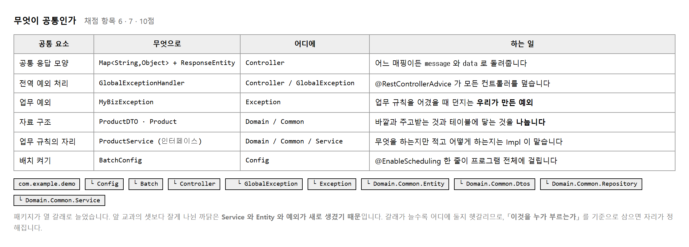
이 과제에서 새로 생긴 공통 요소가 응답의 생김새입니다.
등록도 수정도 삭제도 모두 message 를 담은 Map 을 돌려줍니다.
받는 쪽에서 보면 언제나 같은 자리에 같은 것이 있습니다.
이것이 약속이고, 약속이 있으면 클라이언트를 만들기 쉬워집니다.
// 성공했을 때 — 어느 매핑이든 같은 모양
{ "data": { ⋯ }, "message": "상품 등록 성공!" }
// 검증에 걸렸을 때 — 필드 이름이 그대로 키가 됩니다
{ "name": "상품명은 필수 항목입니다.", "price": "가격은 0 이상이어야 합니다." }
// 업무 규칙을 어겼을 때 — 전역 핸들러가 만듭니다
{ "error": "이미 존재하는 상품명입니다: 무선 마우스" }
MyBizException 은 우리가 만든 예외입니다.
자바가 주는 예외를 쓰지 않고 새로 만든 까닭이 있습니다.
IllegalArgumentException 같은 것은 다른 곳에서도 납니다.
내가 일부러 던진 것인지 라이브러리 안에서 난 것인지 구별이 안 됩니다.
이름이 하나 있으면 전역 핸들러에서 이것만 골라 400 으로 내보낼 수 있습니다. 나머지는 500 으로 갑니다. 이 구분이 곧 설계입니다.
@ResponseStatus(value = HttpStatus.BAD_REQUEST, reason = "잘못된 비즈니스 요청입니다.")
public class MyBizException extends RuntimeException { // 확인 예외가 아닙니다
public MyBizException(String message) { super(message); }
}
RuntimeException 을 물려받았다는 점을 눈여겨보십시오.
트랜잭션이 이 계열만 자동으로 되돌리기 때문입니다.
Exception 을 바로 물려받으면 일괄 등록 롤백이 안 됩니다.
RuntimeException 이라야 «롤백» 됩니다
목적 — 항목 6 · 7 로 10점 입니다. 공통으로 뽑을 것이 여섯인데, 그 가운데 업무 예외 하나가 무엇을 물려받느냐로 롤백이 갈립니다.
| 공통 요소 | 무엇으로 | 왜 공통인가 |
|---|---|---|
| 응답 모양 | 공통 응답 클래스 | 모든 API 가 같은 자리에 같은 것을 담습니다 |
| 전역 예외 처리 | @RestControllerAdvice |
어디서 터지든 한곳에서 받습니다 |
| 업무 예외 | MyBizException |
내가 일부러 던진 것임을 표시합니다 |
| 자료 구조 | ProductDTO |
계층 사이를 오가는 그릇 |
| 업무 규칙의 자리 | Service | 화면과 DB 양쪽에서 떨어져 있습니다 |
| 배치 켜기 | @EnableScheduling |
프로그램 전체 설정입니다 |
// 성공 — 어느 API 든 같은 모양
{"success": true, "message": "상품 등록 성공", "data": {…}}
// 검증 실패 — 필드 이름이 그대로 키
{"success": false, "message": "입력값을 확인하세요",
"data": {"name":"상품명을 입력하세요","price":"가격은 0 이상이어야 합니다"}}
// 업무 규칙 위반 — 전역 핸들러가 만듭니다
{"success": false, "message": "이미 존재하는 상품명입니다: 무선 마우스", "data": null}
받는 쪽에서 보면 언제나 같은 자리에 같은 것이 있습니다. 이것이 약속이고, 약속이 있으면 화면을 만들기 쉬워집니다.
| 자바가 주는 예외를 쓰면 | 이름을 하나 만들면 |
|---|---|
IllegalArgumentException 은
라이브러리 안에서도 납니다.
내가 던진 것인지 구별이 안 됩니다 |
MyBizException 은
내가 던진 것뿐입니다.
전역 핸들러에서 이것만 400 으로 내보냅니다 |
@ResponseStatus(value = HttpStatus.BAD_REQUEST, reason = "잘못된 비즈니스 요청입니다.")
public class MyBizException extends RuntimeException {
public MyBizException(String message) { super(message); }
}
Exception 을 물려받으면 «롤백이 안 됩니다»같은 일괄 등록을 두 가지 예외로 던져 보십시오. 가운데 한 건이 음수라 둘 다 실패합니다.
| 던진 예외 | 응답 | 표에 남은 건수 |
|---|---|---|
RuntimeException 계열 | 400 | 0건 — 전체 롤백 |
Exception 을 바로 물려받은 것 | 500 | 1건 남음 — 롤백 «안 됨» |
+----+--------------+-------+
| id | name | price |
+----+--------------+-------+
| 7 | 케이블 1m | 5000 | ← 실패했는데 첫 건이 «들어가 있습니다»
+----+--------------+-------+
@Transactional 은 RuntimeException 계열만
자동으로 되돌립니다.
확인 예외(Exception 을 바로 물려받은 것)는
「예상한 상황」 으로 보고 되돌리지 않습니다.
항목 17 이 「일괄 등록을 한 트랜잭션으로 · 중간 실패 시 전체 롤백」 이라
여기서 어긋나면 실습 2-13 의 점수까지 잃습니다.@Transactional(rollbackFor = Exception.class) 를 적으면 됩니다.
다만 한 줄 더 적어야 하는 것을 기억해야 하므로,
RuntimeException 을 물려받는 쪽이 안전합니다.kr.shop
├─ config @EnableScheduling · 설정
├─ controller REST 컨트롤러
├─ service 인터페이스 + 구현
├─ repository JpaRepository
├─ domain Entity
├─ common 공통 응답 · DTO · 업무 예외 · 전역 핸들러
└─ batch 스케줄 배치
항목 7 이 「역할이 분명한 단위로 배치」 입니다. 폴더 이름만 봐도 무엇이 들었는지 짐작되면 됩니다.
| 헷갈리는 것 | 어디에 |
|---|---|
| 공통 응답 클래스 | common — 컨트롤러와 핸들러 둘 다 부릅니다 |
| 업무 예외 | common — Service 가 던지고 핸들러가 받습니다 |
@EnableScheduling |
config 또는 메인 클래스 — 프로그램 전체 설정 |
둘 이상이 부르면 공통, 한 곳만 부르면 그 옆에 둡니다.
제출물 — 공통 요소 여섯 표 + 패키지 구조 + 롤백 되는 판 / 안 되는 판 비교
스스로 확인 —
① 업무 예외가 RuntimeException 을 물려받습니까
② 응답 모양이 세 경우 모두 같은 꼴입니까
③ 패키지가 역할 이름으로 나뉘어 있습니까
④ 롤백이 실제로 되는 것을 봤습니까
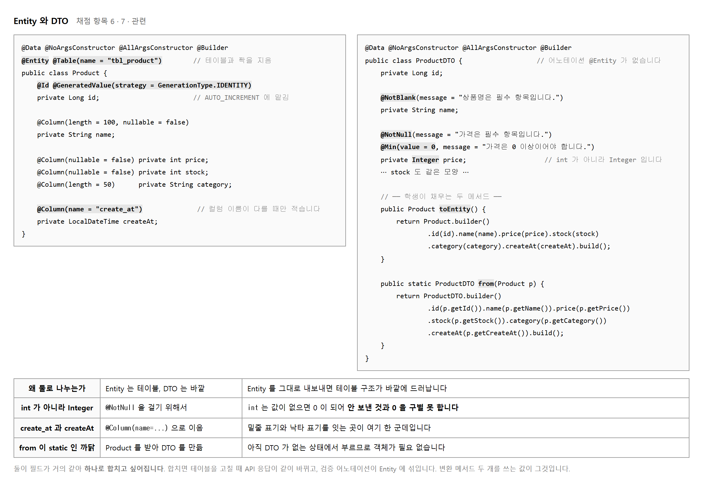
둘의 필드가 똑같습니다. 합치고 싶어지는 것이 당연합니다. 합치면 무슨 일이 생기는지 두 가지만 보십시오.
지금은 상품이라 내보내면 안 될 것이 없습니다. 그래도 나눠 두는 까닭은 나중을 위해서이고, 채점 항목 6 이 「자료 구조를 공통 모듈로 도출」 이라 한 것도 이 뜻입니다.
가격과 재고가 Integer 인 것이 눈에 걸립니다.
int 로 두면 값을 안 보냈을 때 0 이 됩니다.
그러면 @NotNull 이 걸리지 않고,
「가격을 안 적은 것」 과 「가격이 0 원인 것」 을 구별할 수 없습니다.
// int 일 때 — 가격을 빼고 보내면
{ "name": "시험", "stock": 5, "category": "C" }
→ price = 0 으로 통과합니다. 0 원짜리 상품이 등록됩니다.
// Integer 일 때
→ price = null → @NotNull 이 걸려 400 이 나갑니다.
toEntity() 는 DTO 를 Entity 로,
from(Product) 은 Entity 를 DTO 로 바꿉니다.
from 이 static 인 까닭은
아직 DTO 가 없는 상태에서 부르기 때문입니다.
ProductDTO.from(entity) 처럼 클래스 이름으로 부릅니다.
목록에서는 이렇게 쓰입니다.
.map(ProductDTO::from) — Entity 가 든 페이지를 DTO 가 든 페이지로
통째로 바꿉니다. 한 줄로 끝납니다.
int 로 두면 «0 원» 이 통과합니다
목적 — 필드가 똑같은 두 클래스를 굳이 나눕니다. 그리고 자료형 하나 때문에 검증이 통째로 새는 자리가 있습니다.
| Entity 를 그대로 내보내면 | |
|---|---|
| 테이블에 칸을 하나 더하면 | API 응답이 저절로 바뀝니다. 받는 쪽에 알리지도 못한 채로요 |
| 내보내면 안 되는 칸이 생기면 (비밀번호 같은) | 그때 가서 나눠야 하는데 고칠 곳이 많습니다 |
지금은 상품이라 숨길 것이 없습니다. 그래도 나눠 두는 것은 나중을 위해서이고, 항목 6 이 「자료 구조를 공통 모듈로 도출」 이라 한 것도 이 뜻입니다.
| Product (Entity) | ProductDTO |
|---|---|
@Entity · @Table ·
@Id · @GeneratedValue ·
@Column
표와 짝을 맞추는 것들 |
@NotBlank · @NotNull ·
@Min
들어온 값을 검사하는 것들 |
검증 어노테이션을 Entity 에 붙이지 마십시오. Entity 는 「표의 모양」 이고 DTO 는 「받는 값의 규칙」 입니다.
int 로 두고 «가격을 빼고» 보냅니다보낸 JSON : {"name":"시험","stock":5} ← price 가 없습니다
int 일 때 price = 0 → @NotNull 이 «안» 걸립니다
Integer 일 때 price = null → @NotNull 이 걸립니다
int 는 값이 없으면 0 이 됩니다.
그러면 @NotNull 이 「값이 있다」 고 보고 통과시킵니다.
「가격을 안 적은 것」 과 「가격이 0 원인 것」 을 구별할 수 없습니다.
가격 · 재고는 Integer 로 두십시오.| 필드 | 자료형 | 왜 |
|---|---|---|
id | Long |
등록 전에는 없어야 합니다 |
price · stock |
Integer |
안 보낸 것과 0 을 구별합니다 |
name | String |
참조형이라 원래 null 이 됩니다 |
@NotBlank(message = "상품명은 필수 항목입니다")
private String name;
@NotNull(message = "가격은 필수 항목입니다")
@Min(value = 0, message = "가격은 0 이상이어야 합니다")
private Integer price;
| 붙인 것 | 안 붙이면 |
|---|---|
@NotNull |
값을 안 보내도 통과합니다 |
@Min(0) |
음수가 들어갑니다 (실습 2-14 의 보안 항목) |
둘 다 있어야 합니다. @Min 만 붙이면
값이 없을 때(= null) 그냥 통과합니다.
// DTO → Entity : 받은 값으로 표에 넣을 것을 만듭니다
public Product toEntity() {
return Product.builder().name(name).price(price).stock(stock).build();
}
// Entity → DTO : 꺼낸 것을 내보낼 모양으로 바꿉니다
public static ProductDTO from(Product p) {
return ProductDTO.builder().id(p.getId()).name(p.getName())
.price(p.getPrice()).stock(p.getStock()).build();
}
왜 from 만 static 인가 | |
|---|---|
toEntity() |
이미 DTO 가 있는 상태에서 부릅니다 —
dto.toEntity() |
from(Product) |
아직 DTO 가 없는 상태에서 부릅니다 —
ProductDTO.from(entity) |
return repository.findAll(pageable).map(ProductDTO::from);
ProductDTO::from 은 「from 이라는 메서드를 쓰겠다」 는 뜻입니다.
Entity 가 든 페이지를 DTO 가 든 페이지로 바꿔 줍니다.
반복문을 안 써도 됩니다.
:: 가 낯설면
.map(p -> ProductDTO.from(p)) 라고 적어도 똑같습니다.
짧게 적는 방법일 뿐입니다.| 보낼 것 | 나와야 할 응답 | |
|---|---|---|
| 1 | 가격을 빼고 | 400 · 「가격은 필수 항목입니다」 |
| 2 | 가격을 -100 으로 |
400 · 「가격은 0 이상이어야 합니다」 |
| 3 | 가격을 0 으로 |
200 — 0 원 상품은 «허용» 입니다 |
3번이 통과하는 것이 맞습니다.
막아야 할 것은 「안 적은 것」 과 「음수」 이지 0 이 아닙니다.
int 로 두면 1번과 3번이 구별되지 않습니다.
제출물 — ProductDTO 코드 +
세 가지를 보낸 응답 캡처
스스로 확인 —
① 가격 · 재고가 Integer 입니까
② @NotNull 과 @Min 을 둘 다 붙였습니까
③ 검증 어노테이션이 Entity 에는 없습니까
④ 가격을 빼고 보냈을 때 400 이 나옵니까
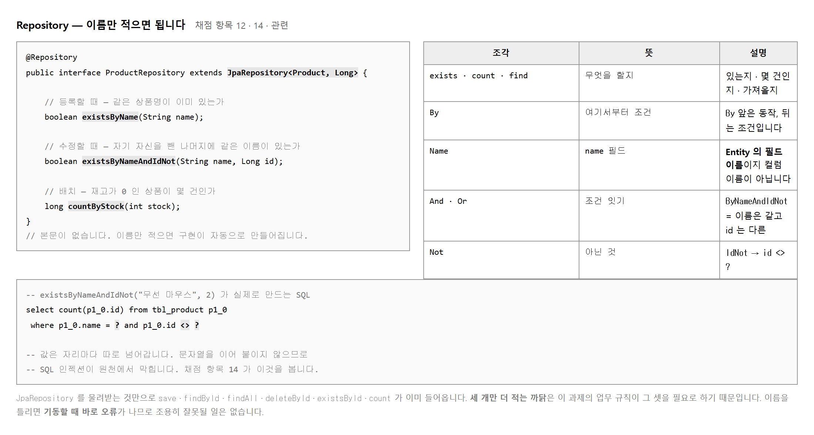
인터페이스에 메서드 이름만 적었는데 동작합니다. Spring Data JPA 가 기동할 때 이름을 읽어 구현 클래스를 만들어 줍니다. 그래서 이름을 규칙대로 지어야 하고, 틀리면 기동할 때 바로 오류가 납니다. 조용히 잘못될 일이 없다는 점이 오히려 편합니다.
// 이름을 틀렸을 때 실제로 나오는 오류 No property 'stok' found for type 'Product' Did you mean 'stock'? // Entity 의 필드 이름을 씁니다. 컬럼 이름이 아닙니다. countByCreateAt(...) ○ Product 의 필드가 createAt 이므로 countByCreate_at(...) × 컬럼 이름으로 쓰면 못 찾습니다
JpaRepository 를 물려받는 것만으로
저장 · 단건 조회 · 전체 조회 · 삭제 · 존재 확인 · 건수가 이미 들어옵니다.
그런데 이 과제의 업무 규칙이 그것만으로는 안 되는 것 셋을 요구합니다.
| 메서드 | 언제 쓰는가 | 없으면 |
|---|---|---|
| existsByName | 등록할 때 | 같은 이름의 상품이 여러 개 생깁니다 |
| existsByNameAndIdNot | 수정할 때 | 자기 이름으로 고치는 것도 막힙니다 |
| countByStock | 배치가 돌 때 | 전부 가져와 세어야 해 느립니다 |
가운데 것이 까다롭습니다. 수정할 때 그냥 existsByName 을 쓰면,
이름을 안 바꾸고 가격만 고치려 해도 「이미 있는 이름」 이라며 막힙니다.
자기 자신을 빼야 하므로 AndIdNot 이 붙습니다.
목적 — 본문이 없는데 동작합니다. Spring Data JPA 가 메서드 이름을 읽어 구현을 만들어 주기 때문입니다. 그래서 이름이 곧 코드 입니다.
JpaRepository 를 물려받는 것만으로 이만큼이 들어옵니다.
| 메서드 | 하는 일 |
|---|---|
save(entity) | 저장 — id 가 없으면 넣고, 있으면 고칩니다 |
findById(id) | 단건 — Optional 로 돌려줍니다 |
findAll() | 전체 |
deleteById(id) | 삭제 |
existsById(id) | 있는지 |
count() | 몇 건인지 |
여섯 개를 안 적어도 됩니다. 그런데도 셋을 더 적는 까닭이 있습니다.
public interface ProductRepository extends JpaRepository<Product, Long> {
boolean existsByName(String name); // 등록할 때
boolean existsByNameAndIdNot(String name, Long id); // 수정할 때
long countByStock(int stock); // 배치가 돌 때
}
| 메서드 | 없으면 |
|---|---|
existsByName |
같은 이름의 상품이 여러 개 생깁니다 |
existsByNameAndIdNot |
자기 이름으로 고치는 것도 막힙니다 — 절차 3 |
countByStock |
전부 가져와 세어야 해 느립니다 |
// 3번 상품의 «가격만» 고치려는 요청
PUT /api/products/3 {"name":"무선 마우스","price":27000,"stock":10}
| 수정할 때 무엇을 쓰느냐 | 결과 |
|---|---|
existsByName("무선 마우스") |
true — 3번 자신이 걸립니다. 「이미 있는 이름」 이라며 막힙니다 |
existsByNameAndIdNot("무선 마우스", 3L) |
false — 3번을 뺀 나머지에 없으니 통과 |
AndIdNot 이 「자기 자신은 빼고」 라는 뜻입니다.
이름을 안 바꾸고 가격만 고치는 것이 가장 흔한 수정이라
이것을 빠뜨리면 수정 기능이 거의 안 됩니다.
existsByStok 처럼 한 글자를 빼고 기동해 보십시오.
APPLICATION FAILED TO START
QueryCreationException: Cannot create query for method
[ProductRepository.existsByStok(java.lang.String)];
No property 'stok' found for type 'Product'; Did you mean 'stock'
| 적은 것 | 되는가 |
|---|---|
countByCreateAt(...) |
○ — Entity 의 필드가 createAt 입니다 |
countByCreate_at(...) |
× — 컬럼 이름으로 쓰면 못 찾습니다 |
표의 칸 이름이 아니라 «자바 필드 이름» 입니다. JPA 가 필드 → 칸 변환을 알아서 하므로, 나는 필드만 알면 됩니다.
| 조각 | 뜻 | 보기 |
|---|---|---|
exists | 있는지 — boolean |
existsByName |
count | 몇 건인지 — long |
countByStock |
find | 찾아서 돌려줌 | findByNameContaining |
And · Or | 조건을 잇습니다 | existsByNameAndIdNot |
Not | 아닌 것 | …IdNot |
LessThanEqual | <= |
findByStockLessThanEqual |
Containing | LIKE %값% |
findByNameContaining |
Hibernate: select p1_0.id,p1_0.name,p1_0.price,p1_0.sold_out,p1_0.stock
from product p1_0 where p1_0.stock<=?
| 확인할 것 | |
|---|---|
| 물음표가 보입니다 | JPA 가 알아서 바인딩합니다. 값을 이어 붙이지 않습니다 (항목 19 · 실습 2-14) |
stock<=? |
LessThanEqual 이 이렇게 바뀌었습니다 |
제출물 — ProductRepository 코드 +
이름을 틀렸을 때의 기동 오류 + show-sql 로 찍힌 SQL
스스로 확인 —
① 셋을 본문 없이 적었습니까
② AndIdNot 이 왜 필요한지 압니까
③ 이름을 필드 기준으로 적었습니까
④ 만들어진 SQL 에 물음표가 보입니까
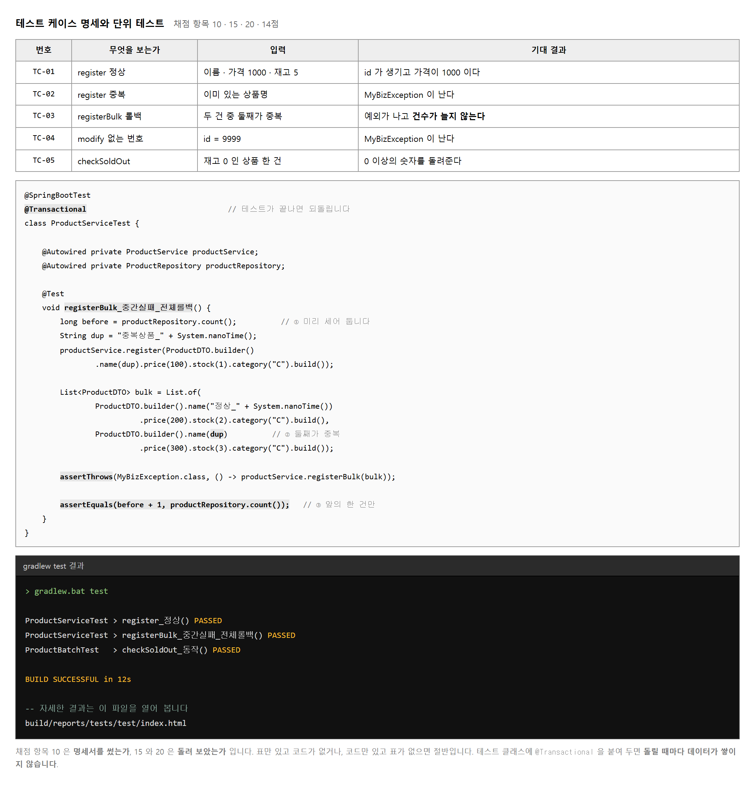
채점 항목 10 · 15 · 20 이 모두 테스트를 봅니다. 합쳐 14점이라 어느 한 항목보다 크게 걸려 있습니다. 그런데 시간이 모자라면 가장 먼저 빠지는 것이 테스트입니다. 테스트를 먼저 쓰라는 뜻이 아니라, 마지막에 남기지 말라는 뜻입니다.
항목 10 은 「테스트 조건을 명세화」 입니다. 코드가 아니라 표입니다. 무엇을 시험하는지, 무엇을 넣는지, 무엇이 나와야 하는지 세 칸이면 됩니다. 항목 15 와 20 이 실제로 돌려 보았는가 입니다.
@SpringBootTest
@Transactional // 테스트가 끝나면 넣은 것이 되돌아갑니다
class ProductServiceTest { ⋯ }
이것이 없으면 테스트를 돌릴 때마다 상품이 쌓입니다. 두 번째 실행부터는 이름이 중복되어 실패합니다. 붙여 두면 테스트가 끝날 때 전부 되돌아가 언제 돌려도 같은 결과가 나옵니다.
다만 「일괄 등록 전체 롤백」 테스트에는 붙이면 안 됩니다.
Service 의 트랜잭션이 테스트의 트랜잭션에 합쳐져
롤백이 따로 일어나지 않기 때문입니다.
붙인 채로 돌리면 한 건이 들어간 것으로 보여
expected: <5> but was: <6> 으로 «실패합니다».
이 테스트만 따로 떼어 클래스에 @Transactional 을 빼십시오
(실습 2-9 절차 5).
이름에 System.nanoTime() 을 붙이는 것도 같은 까닭입니다.
돌릴 때마다 다른 이름이 되어 앞에 남은 자료와 부딪히지 않습니다.
다 시험할 수는 없습니다. 규칙이 있는 곳을 고릅니다. 「같은 이름이면 거절한다」 · 「하나라도 실패하면 전부 취소한다」 처럼 if 가 있는 곳이 시험할 곳입니다. 그냥 저장하고 돌려주기만 하는 곳은 시험해도 얻는 것이 적습니다.
@Transactional 이 «롤백 테스트를» 망칩니다
목적 — 항목 10 · 15 · 20 으로 14점 입니다. 어느 한 항목보다 크게 걸려 있는데 시간이 모자라면 가장 먼저 빠지는 것이 테스트입니다.
항목 10 은 코드가 아니라 표입니다. 세 칸이면 됩니다.
| 번호 | 무엇을 시험하나 | 넣는 값 | 나와야 할 것 |
|---|---|---|---|
| TC-01 | 정상 등록 | 이름 · 가격 1000 · 재고 5 | id 가 생기고 건수 +1 |
| TC-02 | 없는 id 조회 | 999999 |
예외 (404) |
| TC-03 | 일괄 등록 중간 실패 | 가운데 가격이 -1 | 건수가 그대로 |
| TC-04 | 이름 중복 등록 | 이미 있는 이름 | 업무 예외 (400) |
| TC-05 | 배치 품절 표시 | 재고 0 인 상품 | soldOut 이 true |
| 시험할 곳 | 안 해도 되는 곳 |
|---|---|
if 가 있는 곳
「같은 이름이면 거절」 · 「하나라도 실패하면 전부 취소」 |
그냥 저장하고 돌려주기만 하는 곳
시험해도 얻는 것이 적습니다 |
규칙이 있는 곳을 고릅니다. 다 시험할 수는 없습니다.
@Transactional 을 붙입니다@SpringBootTest
@Transactional // 테스트가 끝나면 넣은 것이 되돌아갑니다
class ProductServiceTest { … }
| 안 붙이면 | 붙이면 |
|---|---|
| 돌릴 때마다 상품이 쌓입니다. 두 번째부터는 이름이 겹쳐 실패합니다 | 끝날 때 전부 되돌아갑니다. 언제 돌려도 같은 결과 |
이름에 System.nanoTime() 을 붙이는 것도 같은 까닭입니다 —
돌릴 때마다 다른 이름이 되어 앞의 자료와 부딪히지 않습니다.
위 설정 그대로 TC-03 을 돌려 보십시오.
[ 2 tests successful ]
[ 1 tests failed ]
Failures (1):
ProductServiceTest:TC-03 일괄 등록 중간 실패 — 전체 롤백
=> AssertionFailedError: 한 건도 들어가면 안 됩니다
expected: <5> but was: <6>
@Transactional 이 테스트 전체를 한 트랜잭션으로 묶으면,
Service 의 트랜잭션이 새로 시작되지 않고 «그 안에 합쳐집니다».
그래서 Service 가 되돌리려 해도 독립적으로 되돌아가지 않고,
이미 넣은 한 건이 같은 트랜잭션 안에서는 보입니다.
한 건이 늘어난 것으로 세어져 실패합니다.// 클래스에 @Transactional 을 «붙이지 않습니다»
@SpringBootTest
class BulkRollbackTest {
@Test
void bulkRollback() {
long before = repository.count();
assertThrows(IllegalArgumentException.class, () -> service.registerBulk(list));
assertEquals(before, repository.count(), "한 건도 들어가면 안 됩니다");
}
@AfterEach // 되돌려 주는 것이 없으니 손수 치웁니다
void clean() {
repository.findByNameContaining("롤백시험")
.forEach(p -> repository.deleteById(p.getId()));
}
}
before=5 after=5
[ 1 tests successful ]
[ 0 tests failed ]
@AfterEach 에서 이름으로 찾아 지웁니다.
그래서 이름에 System.nanoTime() 같은 표시를 붙여
이 테스트가 만든 것만 골라낼 수 있게 해 둡니다.gradlew.bat test
[ 2 containers successful ]
[ 4 tests successful ]
[ 0 tests failed ]
| 캡처에 보여야 할 것 | |
|---|---|
| 실패 0 | 다 통과했다는 것 |
| 테스트 이름 | @DisplayName 을 한국어로 적어 두면
표와 짝을 맞추기 쉽습니다 |
| 항목 | 보는 것 | 내는 것 |
|---|---|---|
| 10 | 조건을 명세했는가 | 절차 1 의 표 |
| 15 | 기능 테스트를 수행했는가 | JUnit 코드 + 통과 화면 |
| 20 | 배치를 테스트했는가 | 배치 테스트 (실습 2-15) |
표만 있으면 10점, 코드만 있으면 15 · 20점입니다. 둘 다 내야 14점을 다 받습니다.
제출물 — 테스트 케이스 명세표 + JUnit 코드 +
gradlew test 통과 화면
스스로 확인 —
① 표를 먼저 만들었습니까
② @Transactional 을 붙였습니까
③ 롤백 테스트만 따로 뗐습니까
④ 실패가 0 입니까
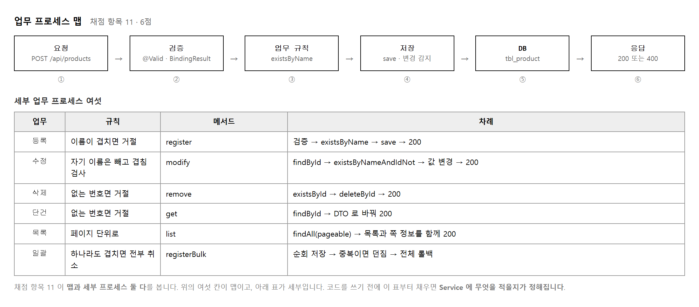
채점 항목 11 이 「맵과 세부 업무 프로세스를 확인 · 정리」 입니다. 맵은 한 요청이 지나가는 큰 길 하나이고, 세부는 업무마다 다른 사정입니다. 등록은 이름이 겹치는지 보고, 수정은 자기를 뺀 나머지에서 보고, 삭제는 그 번호가 있는지만 봅니다.
세부 표의 「차례」 칸이 곧 Service 메서드의 본문입니다. 「findById → existsByNameAndIdNot → 값 변경 → 200」 이라고 적어 두면 그대로 옮기면 됩니다. 코드를 쓰다가 순서를 헷갈리는 일이 없어집니다.
// 표에 적은 차례
findById → existsByNameAndIdNot → 값 변경 → 200
// 그대로 옮긴 코드
Product entity = productRepository.findById(id)
.orElseThrow(() -> new MyBizException("상품을 찾을 수 없습니다. id=" + id));
if (productRepository.existsByNameAndIdNot(dto.getName(), id))
throw new MyBizException("이미 존재하는 상품명입니다: " + dto.getName());
entity.setName(dto.getName()); // 값 변경
⋯
return ProductDTO.from(entity); // 컨트롤러가 200 으로 감쌉니다
중복 검사를 먼저 하고 findById 를 나중에 하면 어떻게 될까요.
없는 번호로 수정을 요청했을 때
「이미 있는 이름입니다」 라는 엉뚱한 답이 나갑니다.
있는지부터 보고 규칙을 따지는 것이 맞습니다.
표에 순서를 적어 두는 값이 이런 데서 나옵니다.
목적 — 항목 11 은 6점이고 표 한 장입니다. 그런데 이 표를 채우면 Service 코드가 저절로 써집니다. 문서를 먼저 쓰는 것이 오히려 빠릅니다.
요청 → 검증 → 업무 규칙 → 저장 → DB → 응답
│ │ │ │
│ @Valid Service Repository
│ (400) (400 던짐)
Controller Controller (200)
| 칸 | 어디서 | 막히면 |
|---|---|---|
| 검증 | 컨트롤러의 @Valid |
400 — 칸마다 메시지 |
| 업무 규칙 | Service | 400 — 업무 예외를 던집니다 |
| 저장 | Repository | 500 — 진짜 오류 |
큰 길은 하나입니다. 여섯 업무가 모두 이 길을 지나갑니다.
| 업무 | 업무 규칙 | 차례 |
|---|---|---|
| 등록 | 이름이 겹치면 거절 | existsByName → save → 200 |
| 수정 | 자기를 뺀 나머지에 겹치면 거절 | findById →
existsByNameAndIdNot → 값 변경 → 200 |
| 삭제 | 그 번호가 있는지만 | existsById → delete → 200 |
| 단건 | 없으면 404 | findById → 200 |
| 목록 | 없음 | findAll → 200 |
| 일괄 | 하나라도 실패하면 전부 취소 | 반복 save → 한 트랜잭션 → 200 |
// 표에 적은 차례
findById → existsByNameAndIdNot → 값 변경 → 200
// 그대로 옮긴 코드
Product entity = repository.findById(id)
.orElseThrow(() -> new MyBizException("상품을 찾을 수 없습니다. id=" + id));
if (repository.existsByNameAndIdNot(dto.getName(), id))
throw new MyBizException("이미 존재하는 상품명입니다: " + dto.getName());
entity.setName(dto.getName()); // 값 변경
…
return ProductDTO.from(entity); // 컨트롤러가 200 으로 감쌉니다
표를 안 만들면 코드를 쓰다가 순서를 헷갈립니다. 만들어 두면 옮기기만 하면 됩니다.
수정에서 중복 검사를 먼저 하고 findById 를 나중에 해 보십시오.
없는 번호로 수정을 요청하면 이렇게 됩니다.
| 순서가 맞을 때 | 순서를 뒤바꿨을 때 |
|---|---|
HTTP 404
"상품을 찾을 수 없습니다: 9999"
맞는 답입니다 |
HTTP 400
"이미 존재하는 상품명입니다: 무선 마우스"
엉뚱한 답입니다 |
| 상황 | 코드 | 누가 만드는가 |
|---|---|---|
| 정상 | 200 | 컨트롤러 |
| 입력값이 틀림 | 400 | @Valid → 전역 핸들러 |
| 업무 규칙 위반 | 400 | Service 가 던짐 → 전역 핸들러 |
| 없는 자료 | 404 | Service 가 던짐 → 전역 핸들러 |
| 그 밖 | 500 | 전역 핸들러 |
400 과 404 를 갈라 두십시오. 둘 다 「안 됐다」 지만 고칠 곳이 다릅니다 — 400 은 보낸 값을, 404 는 번호를 봐야 합니다.
docs/업무프로세스맵.md
1. 맵 한 장 (요청 → 검증 → 규칙 → 저장 → 응답)
2. 세부 여섯 표 (업무 · 규칙 · 차례 · 응답 코드)
제출물 — docs/업무프로세스맵.md +
순서를 뒤바꿨을 때의 엉뚱한 응답 화면
스스로 확인 —
① 맵과 세부를 나눠 적었습니까
② 세부에 「차례」 칸이 있습니까
③ 수정에서 findById 가 먼저입니까
④ 400 과 404 를 갈라 두었습니까
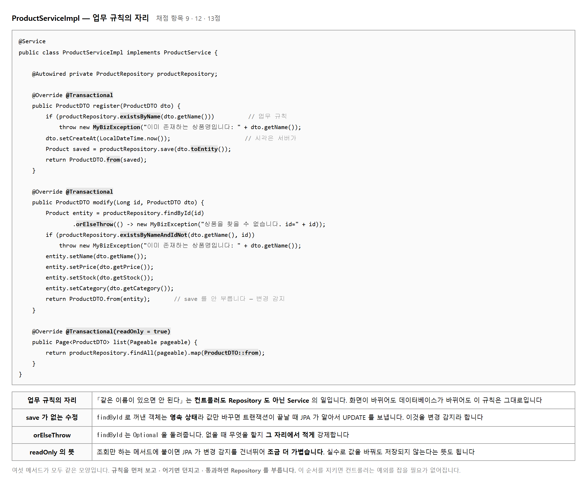
규칙을 먼저 보고, 어기면 던지고, 통과하면 Repository 를 부릅니다. 이 순서를 지키면 컨트롤러가 예외를 잡을 필요가 없어집니다. 던진 예외는 전역 핸들러가 받아 400 으로 내보내기 때문입니다.
modify 를 보면 save 가 없습니다.
빠뜨린 것이 아니라 안 불러도 되기 때문입니다.
findById 로 꺼낸 객체는 JPA 가 관리하는 영속 상태입니다.
값만 바꿔 두면 트랜잭션이 끝날 때 JPA 가 바뀐 것을 알아채고
UPDATE 를 보냅니다. 이것을 변경 감지라 합니다.
// 콘솔에서 확인할 수 있습니다 — show-sql=true 일 때
Hibernate: select p1_0.id, p1_0.category, ⋯ from tbl_product p1_0 where p1_0.id=?
Hibernate: select count(p1_0.id) from tbl_product p1_0 where p1_0.name=? and p1_0.id<>?
Hibernate: update tbl_product set category=?, name=?, price=?, stock=? where id=?
// save 를 안 불렀는데 나갑니다
save 를 불러도 틀리지는 않습니다. 다만 몰라서 부른 것과
알고도 부른 것은 다릅니다.
영속 상태가 아닌 객체(예: 새로 만든 것)는 save 가 있어야 합니다.
그래서 register 에는 save 가 있고
modify 에는 없습니다.
| 메서드 | 붙이는 것 | 까닭 |
|---|---|---|
| register · modify · remove | @Transactional | 값을 바꿉니다 |
| registerBulk | @Transactional | 여러 건을 한 묶음으로 바꿉니다 |
| get · list | @Transactional(readOnly = true) | 읽기만 하므로 변경 감지를 건너뜁니다 |
save 를 «안 부르는» 수정
목적 — 항목 9 · 12 로 13점 입니다.
여섯 메서드가 모두 같은 모양이라 하나를 익히면 나머지는 쉽습니다.
다만 modify 하나가 낯설게 생겼습니다.
① 규칙을 «먼저» 본다
② 어기면 «던진다» ← 컨트롤러는 잡지 않습니다
③ 통과하면 Repository 를 부른다
④ DTO 로 바꿔 돌려준다
이 순서를 지키면 컨트롤러가 try-catch 를 안 써도 됩니다.
던진 예외는 전역 핸들러가 받아 400 이나 404 로 내보냅니다.
@Override
@Transactional
public ProductDTO register(ProductDTO dto) {
if (repository.existsByName(dto.getName())) { // ① 규칙
throw new MyBizException("이미 존재하는 상품명입니다: " + dto.getName()); // ②
}
Product saved = repository.save(dto.toEntity()); // ③
return ProductDTO.from(saved); // ④
}
save 가 «없습니다»@Override
@Transactional
public ProductDTO modify(Long id, ProductDTO dto) {
Product entity = repository.findById(id)
.orElseThrow(() -> new MyBizException("상품을 찾을 수 없습니다. id=" + id));
if (repository.existsByNameAndIdNot(dto.getName(), id)) {
throw new MyBizException("이미 존재하는 상품명입니다: " + dto.getName());
}
entity.setName(dto.getName()); // 값만 바꿉니다
entity.setPrice(dto.getPrice());
entity.setStock(dto.getStock());
return ProductDTO.from(entity); // save 가 «없습니다»
}
findById 로 꺼낸 객체는 JPA 가 관리하는 영속 상태입니다.
값만 바꿔 두면 트랜잭션이 끝날 때 JPA 가 바뀐 것을 알아채고
스스로 UPDATE 를 보냅니다.
이것을 변경 감지 라 합니다.show-sql=true 로 켜 두고 수정을 요청해 보십시오.
Hibernate: select p1_0.id,p1_0.name,p1_0.price,p1_0.sold_out,p1_0.stock
from product p1_0 where p1_0.id=?
Hibernate: update product set name=?,price=?,sold_out=?,stock=? where id=?
↑ save 를 안 불렀는데 나갑니다
HTTP 200 {"success":true,"message":"상품 수정 성공",
"data":{"id":1,"name":"무선 마우스","price":27000,"stock":10}}
save 를 불러도 | |
|---|---|
| 틀리지는 않습니다 | 다만 몰라서 부른 것과 알고 안 부른 것은 다릅니다. 물어보면 설명할 수 있어야 합니다 |
readOnly 를 붙입니다@Transactional(readOnly = true)
public ProductDTO get(Long id) { … }
@Transactional(readOnly = true)
public Page<ProductDTO> list(Pageable pageable) { … }
readOnly = true 가 하는 일 | |
|---|---|
| 변경 감지를 끕니다 | 바뀐 것이 있는지 안 봅니다 — 조금 빨라집니다 |
| 실수로 고치는 것을 막습니다 | 조회인데 값이 바뀌는 사고를 예방합니다 |
orElseThrow 를 씁니다| 이렇게 쓰면 | 이렇게 씁니다 |
|---|---|
Optional<Product> o = repository.findById(id);
세 줄 |
Product p = repository.findById(id)
한 줄 |
findById 가 Optional 을 돌려주는 까닭은
「없을 수도 있다」 는 것을 자료형으로 알리기 위해서입니다.
.get() 을 바로 부르면 그 뜻이 없어집니다.
| 찾을 것 | 몇 건이어야 | |
|---|---|---|
| □ | 컨트롤러 안의
existsBy · if 로 하는 규칙 검사 |
0건 |
| □ | 컨트롤러 안의
try · catch |
0건 — 전역 핸들러가 받습니다 |
| □ | Service 의 @Transactional |
여섯 메서드 모두 |
제출물 — ProductServiceImpl 여섯 메서드 +
수정할 때 update 가 나가는 콘솔
스스로 확인 —
① 여섯이 같은 순서(규칙 → 던짐 → 저장 → 변환)입니까
② modify 에 save 가 없어도 되는 까닭을 압니까
③ 조회에 readOnly 를 붙였습니까
④ 컨트롤러에 규칙 검사가 없습니까
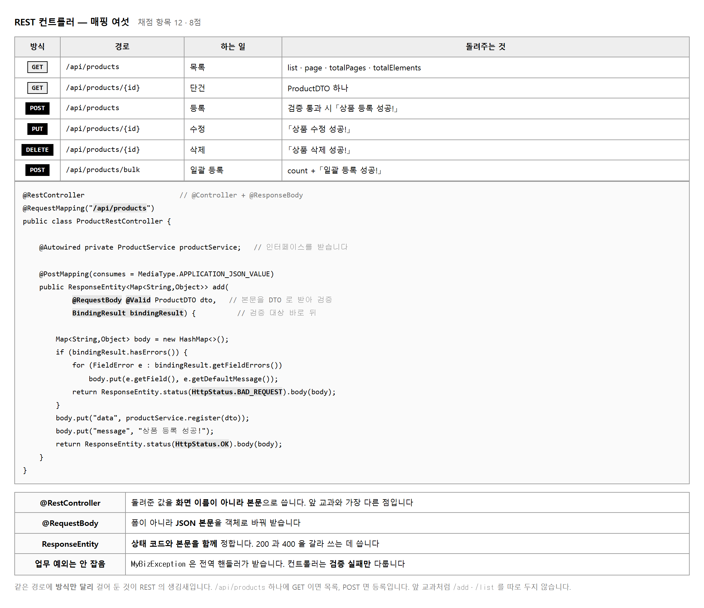
앞 교과에서는 /member/add · /member/list 처럼
경로에 동사를 넣었습니다.
REST 는 경로에 대상만 적고 무엇을 할지는 HTTP 방식으로 나타냅니다.
| 앞 교과 방식 | REST 방식 | 하는 일 |
|---|---|---|
| /product/list | GET /api/products | 목록 |
| /product/add | POST /api/products | 등록 |
| /product/edit?id=3 | PUT /api/products/3 | 수정 |
| /product/del?id=3 | DELETE /api/products/3 | 삭제 |
경로가 짧아지고 규칙이 뚜렷해집니다.
주문이 생기면 /api/orders 가 될 것이 보지 않아도 짐작됩니다.
@Controller 였다면 돌려준 문자열을 화면 이름으로 찾았습니다.
@RestController 는 돌려준 값을 그대로 본문으로 씁니다.
객체를 돌려주면 JSON 으로 바꿔 내보냅니다.
// 검증에 걸렸을 때 — 400 return ResponseEntity.status(HttpStatus.BAD_REQUEST).body(body); // 잘 됐을 때 — 200 return ResponseEntity.status(HttpStatus.OK).body(body);
둘을 갈라 쓰지 않으면 곤란해집니다. 무엇이 잘못돼도 200 을 내보내면 받는 쪽이 성공한 줄 압니다. 화면이 없는 API 라 사람이 눈으로 알아채지 못하므로, 상태 코드가 유일한 신호입니다.
업무 규칙을 어겼을 때는 컨트롤러가 아무것도 안 합니다.
Service 가 던진 MyBizException 을 전역 핸들러가 받아
400 으로 내보냅니다. 컨트롤러는 검증 실패만 다룹니다.
목적 — 항목 12 는 8점, m12 에서 가장 큰 항목 둘 중 하나입니다. 앞 교과의 경로에 동사를 넣던 방식과 무엇이 다른지부터 봅니다.
| 앞 교과 방식 | REST 방식 | 하는 일 |
|---|---|---|
/product/list |
GET /api/products | 목록 |
/product/add |
POST /api/products | 등록 |
/product/edit?id=3 |
PUT /api/products/3 | 수정 |
/product/del?id=3 |
DELETE /api/products/3 | 삭제 |
경로에는 대상만 적고, 무엇을 할지는 방식으로 나타냅니다.
주문이 생기면 /api/orders 가 될 것이 보지 않아도 짐작됩니다.
@RestController
@RequestMapping("/api/products")
public class ProductController {
@GetMapping public … list()
@GetMapping("/{id}") public … get(@PathVariable Long id)
@PostMapping public … register(@Valid @RequestBody ProductDTO dto)
@PutMapping("/{id}") public … modify(@PathVariable Long id,
@Valid @RequestBody ProductDTO dto)
@DeleteMapping("/{id}") public … remove(@PathVariable Long id)
@PostMapping("/bulk") public … bulk(@RequestBody List<ProductDTO> list)
}
| 어노테이션 | 뜻 |
|---|---|
@PathVariable |
경로의 {id} 를 매개변수로 받습니다 |
@RequestBody |
본문의 JSON 을 객체로 바꿉니다 |
@Valid |
바꾼 객체를 검사합니다. 없으면 검증이 안 돕니다 |
@RestController 의 뜻을 확인합니다@Controller 였다면 |
@RestController |
|---|---|
| 돌려준 문자열을 화면 이름으로 찾습니다 | 돌려준 값을 그대로 본문으로 씁니다. 객체면 JSON 으로 바꿔 내보냅니다 |
그래서 templates/ 폴더가 없습니다. 화면이 없는 까닭입니다.
GET /api/products → 200 {"success":true,"message":"목록 조회 성공","data":[…]}
GET /api/products/1 → 200 {"…","data":{"id":1,"name":"무선 마우스",…}}
POST /api/products → 200 {"…","message":"상품 등록 성공","data":{"id":4,…}}
PUT /api/products/1 → 200 {"…","message":"상품 수정 성공",…}
DELETE /api/products/4 → 200 {"…","message":"상품 삭제 성공","data":null}
다섯을 모두 캡처해야 항목 12 를 받습니다. Postman 의 상태 코드가 보이게 잘라 두십시오.
| 코드 | 언제 | 누가 만드는가 |
|---|---|---|
| 200 | 잘 됐을 때 | 컨트롤러 |
| 400 | 입력값이 틀림 | @Valid → 전역 핸들러 |
| 400 | 업무 규칙 위반 | Service 가 던짐 → 전역 핸들러 |
| 404 | 없는 자료 | Service 가 던짐 → 전역 핸들러 |
ResponseEntity.badRequest() ·
ResponseEntity.status(HttpStatus.NOT_FOUND) 로
갈라서 내보내십시오.@PostMapping
public ApiResponse<ProductDTO> register(@Valid @RequestBody ProductDTO dto) {
return ApiResponse.ok("상품 등록 성공", service.register(dto));
}
| 여기에 «없는» 것 | 어디에 있는가 |
|---|---|
try · catch |
전역 핸들러가 받습니다 |
| 이름 중복 검사 | Service |
| 음수 검사 | DTO 의 @Min |
두 줄짜리 메서드가 맞습니다. 길어지면 무언가 잘못 들어온 것입니다.
{"success": true, "message": "…", "data": {…}}
{"success": false, "message": "…", "data": null}
성공이든 실패든 세 칸이 늘 있습니다.
받는 쪽은 success 만 보면 갈라낼 수 있습니다.
어떤 API 는 data 가 없고 어떤 것은 있는 식이면
화면을 만들기 어렵습니다.
제출물 — 컨트롤러 코드 + 다섯 종의 Postman 응답(상태 코드가 보이게)
스스로 확인 —
① 경로에 동사가 없습니까
② 다섯을 모두 걸었습니까
③ @Valid 를 붙였습니까
④ 컨트롤러에 try-catch 가 없습니까
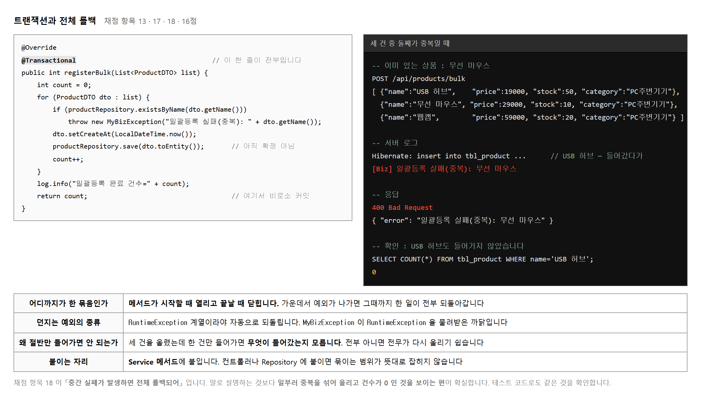
채점 항목 13(정합성 보장) · 17(일괄 등록을 한 트랜잭션으로) ·
18(중간 실패 시 전체 롤백) 이 모두 @Transactional 을 봅니다.
합쳐 16점입니다. 한 줄을 빠뜨리면 셋이 함께 빠집니다.
@Transactional 이 붙은 메서드가 시작할 때 열리고
끝날 때 닫힙니다. 가운데서 예외가 밖으로 나가면
그때까지 한 일이 전부 되돌아갑니다.
그래서 registerBulk 에서 둘째 건이 중복이면
첫째 건까지 사라집니다.
저장은 이미 됐는데 아직 확정이 안 된 상태였기 때문입니다.
// 되돌립니다 — RuntimeException 계열
throw new MyBizException("⋯"); ○
throw new IllegalStateException("⋯"); ○
// 안 되돌립니다 — 확인 예외(checked)
throw new IOException("⋯"); × // 기본 설정에서는 커밋됩니다
// 굳이 되돌리려면 적어 주어야 합니다
@Transactional(rollbackFor = Exception.class)
이것이 MyBizException 이 RuntimeException 을
물려받은 까닭입니다. 별생각 없이 Exception 을 물려받으면
일괄 등록 롤백이 조용히 안 됩니다.
테스트를 돌려 보기 전에는 눈치채기 어렵습니다.
컨트롤러나 Repository 가 아니라 Service 메서드에 붙입니다. 컨트롤러에 붙이면 검증 실패까지 트랜잭션 안에 들어오고, Repository 에 붙이면 한 건마다 따로 열려 묶이지 않습니다. 「한 업무의 시작과 끝」 이 Service 메서드이므로 거기가 맞습니다.
목적 — 항목 13(정합성) · 17(한 트랜잭션) · 18(전체 롤백) 이
모두 @Transactional 을 봅니다.
한 줄을 빠뜨리면 셋이 함께 빠집니다.
@Transactional
public int registerBulk(List<ProductDTO> list) { ← 여기서 «열립니다»
for (ProductDTO d : list) {
if (규칙 위반) throw new MyBizException(…); ← 나가면 «전부 되돌아갑니다»
repository.save(d.toEntity());
}
return list.size();
} ← 여기서 «닫힙니다»
메서드가 시작할 때 열리고 끝날 때 닫힙니다. 가운데서 예외가 밖으로 나가면 그때까지 한 일이 전부 되돌아갑니다.
POST /api/products/bulk
[{"name":"케이블 1m","price":5000,"stock":100},
{"name":"케이블 3m","price":-1, "stock":50}, ← 여기서 터집니다
{"name":"케이블 5m","price":9000,"stock":30}]
HTTP 400 {"success":false,"message":"가격이 음수입니다: 케이블 3m","data":null}
케이블 남은 건수 = 0
| 눈여겨볼 것 | |
|---|---|
| 첫째 건까지 없습니다 | 이미 save 했는데 확정 전이라 사라졌습니다 |
| 셋째는 아예 안 갔습니다 | 둘째에서 멈췄으니 당연합니다 |
| 던진 예외 | 응답 | 남은 건수 |
|---|---|---|
RuntimeException 계열
(MyBizException 포함) |
400 | 0건 — 되돌아갑니다 |
Exception 을 바로 물려받은 것 |
500 | 1건 남음 — 안 되돌아갑니다 |
실습 2-6 에서 본 것과 같습니다.
업무 예외가 RuntimeException 을 물려받아야
여기가 제대로 돕니다. 두 실습이 한 줄로 이어져 있습니다.
| 붙이는 곳 | 되는가 |
|---|---|
| Service 메서드 | ○ — 업무 하나가 한 묶음입니다 |
| 컨트롤러 | △ — 돌기는 하나 계층이 어긋납니다. 트랜잭션은 업무의 일입니다 |
| Repository | × — 메서드 하나가 한 묶음이 되어 여러 건을 함께 묶을 수 없습니다 |
public int outer(List<ProductDTO> list) {
return this.registerBulk(list); // ← 같은 클래스 안에서 직접 부름
}
@Transactional
public int registerBulk(List<ProductDTO> list) { … } // «안 먹습니다»
this. 로 부르면
감싼 것을 건너뛰어 트랜잭션이 안 열립니다.
오류도 안 나고 롤백만 조용히 안 됩니다.
「분명히 붙였는데 안 된다」 면 부르는 자리를 보십시오.readOnly 를 붙입니다| 메서드 | 붙일 것 |
|---|---|
register · modify ·
remove · registerBulk |
@Transactional |
get · list |
@Transactional(readOnly = true) |
| 하는 일 | 찍을 것 | |
|---|---|---|
| 1 | bulk 전 건수 조회 | SQL 결과 |
| 2 | 가운데가 틀린 세 건을 보냄 | 400 응답 |
| 3 | 건수를 다시 조회 | 1번과 같은 숫자 |
| 4 | 세 건을 다 맞게 보냄 | 200 · 건수 +3 |
3번이 핵심입니다. 숫자가 같아야 「전체 롤백」 이 증명됩니다. 1번을 안 찍으면 비교할 것이 없습니다.
제출물 — 네 컷 + registerBulk 코드
(@Transactional 이 보이게)
스스로 확인 —
① 여섯 메서드에 모두 붙였습니까
② 업무 예외가 RuntimeException 계열입니까
③ 같은 클래스 안에서 부르고 있지 않습니까
④ bulk 전후 건수가 같습니까
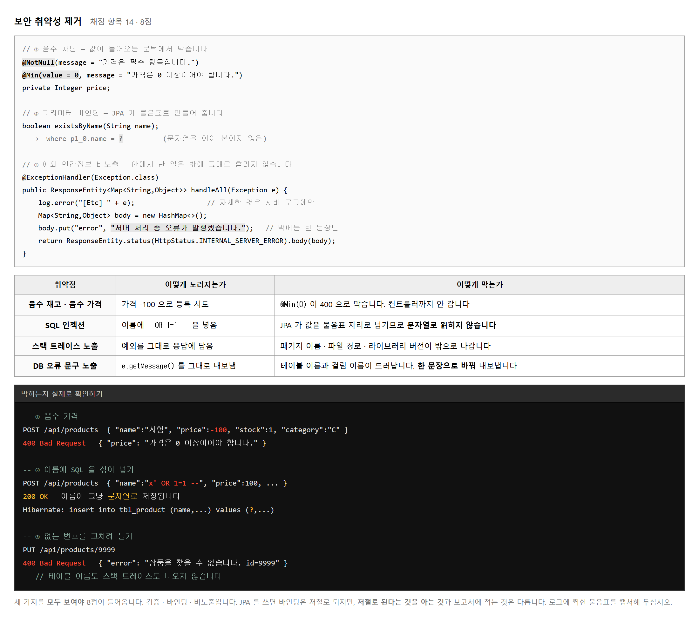
가격이 음수인 상품은 있을 수 없습니다.
이것을 어디서 막을까요.
Service 에서 if (price < 0) throw ⋯ 로 막을 수도 있지만,
더 바깥에서 막는 편이 낫습니다.
@Min(0) 은 컨트롤러에 들어오기도 전에 걸러 냅니다.
바깥에서 막으면 안쪽 코드가 간단해집니다. Service 는 값이 이미 말이 된다고 믿고 업무 규칙만 봅니다. 검증과 업무 규칙이 섞이지 않는 것도 이 덕분입니다.
JPA 를 쓰면 SQL 을 직접 쓰지 않으므로 문자열을 이어 붙일 일 자체가 없습니다. 쿼리메서드가 만들어 내는 SQL 은 언제나 물음표입니다.
다만 저절로 된다는 것을 아는 것과 보고서에 적는 것은 다릅니다.
show-sql=true 로 찍힌 로그에서
where p1_0.name=? 부분을 캡처해 두면 증거가 됩니다.
| 이렇게 내보내면 | 무엇이 새어 나가는가 |
|---|---|
| 스택 트레이스 전체 | 패키지 구조 · 파일 경로 · 라이브러리 버전 |
| SQLException 메시지 | 테이블 이름 · 컬럼 이름 · 제약 조건 이름 |
| 「비밀번호가 틀렸습니다」 | 그 아이디는 있다는 사실 |
마지막 것이 재미있습니다. 친절하려다 정보를 흘리는 경우입니다. 이 과제에는 로그인이 없지만 생각해 둘 만합니다.
전역 핸들러는 두 갈래입니다.
MyBizException 은 메시지를 그대로 내보냅니다.
내가 적은 문장이니 안전합니다.
나머지는 「서버 처리 중 오류가 발생했습니다.」 한 문장으로 바꿉니다.
자세한 것은 서버 로그에만 남습니다.
목적 — 항목 14 는 8점 으로 m12 에서 가장 큰 항목 둘 중 하나입니다. 검증 · 바인딩 · 비노출 셋을 모두 보여야 합니다.
| Service 에서 막으면 | DTO 에서 막으면 |
|---|---|
if (price < 0) throw …;
검증과 업무 규칙이 섞입니다 |
@Min(0)
컨트롤러에 들어오기도 전에 걸러집니다 |
POST /api/products {"name":"음수시험","price":-1,"stock":1}
HTTP 400 {"success":false,"message":"입력값을 확인하세요",
"data":{"price":"가격은 0 이상이어야 합니다"}}
바깥에서 막으면 안쪽 코드가 간단해집니다. Service 는 값이 이미 말이 된다고 믿고 업무 규칙만 봅니다.
POST /api/products
{"name":"오'브라이언'); DROP TABLE product;--","price":1000,"stock":1}
HTTP 200 {"success":true,"message":"상품 등록 성공",
"data":{"id":15,"name":"오'브라이언'); DROP TABLE product;--",…}}
product 건수 = 6 ← 표가 «멀쩡합니다»
| 무엇이 일어났나 | |
|---|---|
| 표가 안 지워졌습니다 | 값이 끝까지 값으로만 남았습니다 |
| 이름이 그대로 저장됐습니다 | 이상한 이름이지만 고장은 아닙니다 |
Hibernate: insert into product (name,price,sold_out,stock) values (?,?,?,?)
show-sql=true 로 찍힌 values (?,?,?,?) 를
캡처해 두어야 항목 14 의 근거가 됩니다.| 이렇게 내보내면 | 무엇이 새어 나가는가 |
|---|---|
| 스택 트레이스 전체 | 패키지 구조 · 파일 경로 · 라이브러리 판 |
SQLException 메시지 |
테이블 이름 · 칸 이름 · 제약 조건 이름 |
| 「비밀번호가 틀렸습니다」 | 그 아이디는 있다는 사실 |
마지막 것이 재미있습니다. 친절하려다 정보를 흘리는 경우입니다. 이 과제에는 로그인이 없지만 생각해 둘 만합니다.
@ExceptionHandler(MyBizException.class)
public … onBiz(MyBizException e) {
return 400, e.getMessage(); // 내가 «적은» 문장이니 안전합니다
}
@ExceptionHandler(Exception.class)
public … onAny(Exception e) {
System.out.println("[서버 오류] " + e); // 자세한 것은 «로그에만»
return 500, "서버 처리 중 오류가 발생했습니다."; // 밖으로는 «한 문장»
}
실제로 서버 오류를 내 보면 이렇게 갈립니다.
| 서버 콘솔에 남는 것 | 응답으로 나가는 것 |
|---|---|
[서버 오류] HttpMessageNotReadableException :
JSON parse error: Invalid UTF-8 start byte 0xbc |
{"success":false,
"message":"서버에서 문제가 생겼습니다","data":null} |
고치는 사람은 콘솔을 보고, 쓰는 사람은 한 문장만 봅니다.
| 무엇 | 어떻게 확인 | |
|---|---|---|
| ① | 검증 | 음수 · 빈 이름을 보내 400 이 나오는가 |
| ② | 바인딩 | show-sql 에 ? 가 보이는가 |
| ③ | 비노출 | 서버 오류를 냈을 때 응답에 클래스 이름이 안 나오는가 |
docs/보안조치.md
① 입력값 검증 : DTO 의 @NotBlank · @NotNull · @Min(0) — 컨트롤러 이전에 차단
② SQL 주입 방지 : JPA 쿼리메서드가 물음표 바인딩을 생성 (show-sql 로그 첨부)
③ 민감정보 비노출 : 전역 핸들러가 예외를 한 문장으로 치환, 상세는 서버 로그에만
제출물 — 세 캡처(400 응답 · 물음표 SQL · 감춰진 오류 응답) + 보안조치 세 줄
스스로 확인 —
① 음수를 보내 400 을 받았습니까
② SQL 처럼 생긴 이름을 넣어 표가 멀쩡한지 봤습니까
③ values (?,?,?,?) 를 캡처했습니까
④ 응답에 클래스 이름이 안 나옵니까
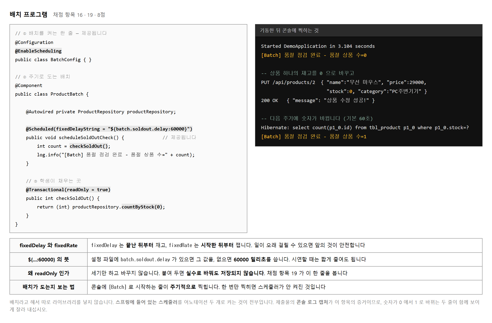
지금까지 만든 것은 전부 누가 불러야 돌았습니다. 브라우저가 요청을 보내야 컨트롤러가 움직였습니다. 배치는 다릅니다. 때가 되면 스스로 돕니다.
왜 필요한가. 재고가 0 이 된 것을 누가 알려 줄까요. 사람이 하루에 한 번 목록을 훑어볼 수도 있지만, 프로그램이 일 분마다 세어 주면 사람은 다른 일을 할 수 있습니다. 이것이 배치의 값입니다.
| 어노테이션 | 어디에 | 하는 일 |
|---|---|---|
| @EnableScheduling | BatchConfig | 스케줄러를 켭니다. 없으면 아무것도 안 돕니다 |
| @Scheduled | 돌릴 메서드 | 얼마마다 돌지 정합니다 |
따로 라이브러리를 넣지 않습니다. 스프링에 들어 있는 것을 켜는 것뿐입니다. 작업지시서에도 「Spring 기본, 라이브러리 추가 없음」 이라 적혀 있습니다. Spring Batch 라는 별도 기술이 있지만 이 과제의 범위가 아닙니다.
@Scheduled(fixedDelay = 60000) // 끝난 뒤부터 60초 세고 다시 시작
@Scheduled(fixedRate = 60000) // 시작한 뒤부터 60초 — 앞의 것이 안 끝나도
// 이 과제가 쓰는 것 — 설정 파일에서 읽되 없으면 60000
@Scheduled(fixedDelayString = "${batch.soldout.delay:60000}")
일이 오래 걸릴 수 있으면 fixedDelay 가 안전합니다.
fixedRate 는 앞의 것이 안 끝났는데 다음 것이 시작될 수 있습니다.
시연할 때는 application-dev.properties 에
batch.soldout.delay=10000 을 넣어 10초로 줄이면
기다리지 않고 보여 줄 수 있습니다.
채점 항목 19 가 「checkSoldOut 을 @Transactional(readOnly=true)로」 입니다. 세기만 하고 바꾸지 않는 메서드이므로 읽기 전용으로 두는 것이 맞습니다. 어노테이션 한 줄이 3점이니 빠뜨리지 마십시오.
목적 — 항목 16 · 19 로 8점 입니다. 지금까지 만든 것은 전부 누가 불러야 돌았습니다. 배치는 때가 되면 스스로 돕니다.
| 어노테이션 | 어디에 | 하는 일 |
|---|---|---|
@EnableScheduling | 설정 클래스 | 스케줄러를 켭니다. 없으면 아무것도 안 돕니다 |
@Scheduled | 돌릴 메서드 | 얼마마다 돌지 정합니다 |
checkSoldOut 을 씁니다@Component
public class ProductBatch {
private final ProductRepository repository;
@Scheduled(fixedDelayString = "${batch.soldout.delay:60000}")
@Transactional(readOnly = true) // ← 항목 19 · 3점
public void checkSoldOut() {
long n = repository.countByStock(0);
System.out.println("[품절 점검 " + LocalTime.now().withNano(0)
+ "] 재고 0 인 상품 " + n + "건");
}
}
readOnly = true 한 줄이 3점입니다.
세기만 하고 바꾸지 않는 메서드이므로 읽기 전용이 맞습니다.
| 설정 | 언제부터 60초를 세는가 |
|---|---|
fixedDelay = 60000 |
끝난 뒤부터 — 앞의 것이 다 끝나야 다음이 시작 |
fixedRate = 60000 |
시작한 뒤부터 — 앞의 것이 안 끝나도 다음이 시작 |
일이 오래 걸릴 수 있으면 fixedDelay 가 안전합니다.
fixedRate 는 겹쳐 돌 수 있습니다.
# 시연할 때는 10초로 줄입니다 — 기다리지 않아도 됩니다
batch.soldout.delay=10000
${… : 60000} 의 콜론 뒤가 「설정이 없을 때 쓸 값」 입니다.
설정 파일을 안 고쳐도 60초로 돕니다.
[품절 점검 11:03:36] 재고 0 인 상품 0건
[품절 점검 11:03:46] 재고 0 인 상품 0건
아무것도 안 했는데 10초마다 찍힙니다. 이것이 「스스로 돈다」 는 뜻입니다.
| 안 찍히면 | 볼 곳 |
|---|---|
| 한 줄도 안 나옴 | @EnableScheduling 을 안 켰습니다 |
| 한 번만 나오고 끝 | @Scheduled 없이 직접 부른 것입니다 |
@Component 가 없음 |
스프링이 이 클래스를 모릅니다 |
mysql> UPDATE product SET stock = 0 WHERE id = 3;
다음 회차를 기다리면 이렇게 됩니다.
[품절 점검 11:03:56] 재고 0 인 상품 0건
[품절 점검 11:04:06] 재고 0 인 상품 1건 ← 여기서 바뀝니다
[품절 점검 11:04:16] 재고 0 인 상품 1건
Hibernate: select count(p1_0.id) from product p1_0 where p1_0.stock=?
countByStock 이 count(...) 로 바뀌었습니다.
전부 가져와 세는 것이 아니라 데이터베이스가 세어 줍니다 (실습 2-8).
@SpringBootTest
class ProductBatchTest {
@Autowired ProductBatch batch;
@Test
@DisplayName("TC-05 품절 점검 배치가 예외 없이 돈다")
void checkSoldOut() {
assertDoesNotThrow(() -> batch.checkSoldOut());
}
}
| 무엇을 시험하는가 | |
|---|---|
| 예외 없이 도는가 | 이것으로 충분합니다. 3점짜리 항목입니다 |
| 숫자가 맞는가까지 보려면 | 재고 0 인 상품을 하나 넣고 세어 봅니다. 여유가 있으면 하십시오 |
제출물 — 배치 코드 + 숫자가 바뀌는 두 줄이 담긴 콘솔 + 배치 테스트 통과 화면
스스로 확인 —
① @EnableScheduling 을 켰습니까
② readOnly = true 를 붙였습니까
③ 숫자가 바뀌는 두 줄을 캡처했습니까
④ 배치 테스트를 썼습니까
| 문서 | 무엇을 적는가 | 덮는 채점 항목 |
|---|---|---|
| 개발환경_명세서 | 의존성 다섯과 까닭 · 설정 파일 둘 · JDK · DB · 포트 | 1 · 2 · 3 |
| 형상관리_방침 | 저장소 · 브랜치 전략 · 커밋 규칙 · 제외 대상 | 4 · 5 |
| 업무프로세스맵 | 큰 길 한 줄 + 업무 여섯의 규칙과 차례 | 11 |
| 테스트케이스_명세서 | 번호 · 무엇을 · 입력 · 기대 결과 | 10 |
GET /api/products 200 과 쪽 정보POST 200 과 새로 받은 id[Batch] 줄, 숫자가 바뀌는 두 줄네 번째에서 실패한 쪽을 빠뜨리기 쉽습니다. 성공만 보이면 「한 트랜잭션인지」 를 증명하지 못합니다. 중복을 섞어 올려 400 이 나고, 그 뒤 목록에 아무것도 안 늘어난 것까지 보여야 항목 18 이 들어옵니다.
ProductRestController 안에 productRepository 가 없는가ProductServiceImpl 안에 ResponseEntity 가 없는가@Transactional 이 다 붙었는가checkSoldOut 에 readOnly = true 가 붙었는가gradlew test 가 통과하는가git log --oneline 이 기능 단위로 나뉘어 있는가일곱 가지를 훑는 데 십 분이면 됩니다. 그 십 분이 합쳐 삼십 점 넘게 지킵니다.
목적 — 다 만든 뒤에 하는 일입니다. 찾기 몇 번으로 계층이 지켜졌는지 확인하고, 문서 넷과 캡처 다섯을 맞춰 냅니다.
| 문서 | 무엇을 적는가 | 항목 |
|---|---|---|
개발환경_명세서 |
의존성 다섯과 까닭 · 설정 둘 · 판 | 1 · 2 · 3 |
형상관리_방침 |
저장소 · 브랜치 · 커밋 규칙 · 제외 대상 | 4 · 5 |
업무프로세스맵 |
큰 길 + 업무 여섯의 규칙과 차례 | 11 |
테스트케이스_명세서 |
번호 · 무엇을 · 입력 · 기대 결과 | 10 |
합쳐 19점입니다. 각 실습에서 미리 써 두었다면 여기서는 모으기만 하면 됩니다.
| 찍을 것 | 보여야 할 것 | |
|---|---|---|
| 1 | 목록 | GET 200 과 data 배열 |
| 2 | 등록 | POST 200 과 새로 받은 id |
| 3 | 검증 실패 | 400 과 칸별 메시지 |
| 4 | 일괄 등록 둘 | 성공한 것 그리고 400 이 난 것 |
| 5 | 배치 로그 | 숫자가 바뀌는 두 줄 |
| 어디서 무엇을 찾나 | 몇 건이어야 | |
|---|---|---|
| 1 | 컨트롤러 안의 Repository |
0건 |
| 2 | Service 안의 ResponseEntity |
0건 |
| 3 | 컨트롤러 안의 try · catch |
0건 |
제대로 나뉘어 있으면 이렇게 나옵니다.
Repository 를 아는 파일 : repository · service · batch
HTTP 를 아는 파일 : controller · GlobalExceptionHandler
@Transactional 아는 파일 : service · batch
| 확인 | 있어야 | |
|---|---|---|
| □ | Service 여섯 메서드의 @Transactional |
여섯 |
| □ | 조회 둘의 readOnly = true |
둘 |
| □ | checkSoldOut 의
readOnly = true |
하나 — 항목 19 · 3점 |
| □ | 컨트롤러의 @Valid |
POST · PUT 둘 |
gradlew.bat test
[ 4 tests successful ]
[ 0 tests failed ]
git log --oneline
9945126 test: 일괄등록 전체 롤백 테스트 추가
d2732b8 feat: ProductServiceImpl 트랜잭션 적용
ae47bd0 feat: ProductRepository 쿼리메서드 세 개 추가
3b7c09b chore: 프로젝트 초기 설정
실패 0 이어야 하고, 커밋이 기능 단위로 나뉘어 있어야 합니다.
cd C:\temp
git clone https://github.com/내이름/저장소.git check
cd check
gradlew.bat bootRun
| 여기서 나오는 것 | 뜻 |
|---|---|
Table 'testdb.tbl_product' doesn't exist |
정상 — schema.sql 을 아직 안 돌렸습니다 |
cannot find symbol: class ProductDTO |
파일 하나를 커밋 안 했습니다 |
build/ 가 통째로 받아짐 |
.gitignore 가 안 먹었습니다 |
| 확인 | |
|---|---|
| □ | 컨트롤러에 Repository 가 없는가 |
| □ | Service 에 ResponseEntity 가 없는가 |
| □ | Service 여섯에 @Transactional 이 다 붙었는가 |
| □ | checkSoldOut 에
readOnly = true 가 붙었는가 |
| □ | gradlew test 가 통과하는가 |
| □ | git log 가 기능 단위인가 |
| □ | 문서 넷이 다 있는가 |
제출물 — 저장소 주소 · 캡처 다섯 컷 · 문서 넷
@Transactional 한 줄을 빠뜨려서 16점 —
합치면 절반에 가깝습니다.
셋 다 코드 실력과 상관이 없습니다.
각 단원에서 그때그때 해 두는 것이 이 교과의 요령입니다.
아래 여덟 가지가 되풀이되는 감점입니다.
이 교과는 한 가지가 여러 항목에 걸려 있습니다.
@Transactional 한 줄이 16점,
테스트가 14점,
계층 분리가 10점입니다.
세 가지만 지켜도 40점이 확보됩니다.
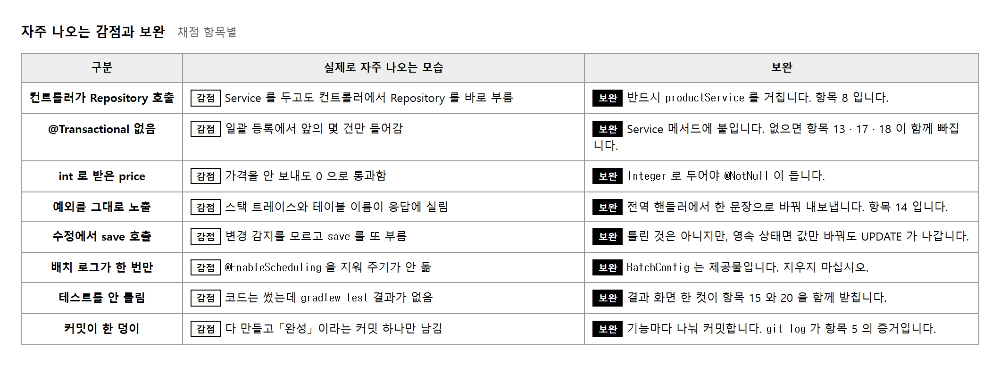